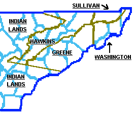
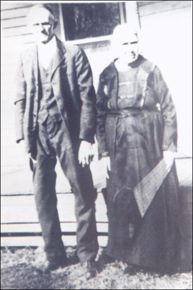

Contents
Appreciation
History and Research
Three Different Henrys
DNA Group 4
First Generation
Second
Generation
Third
Generation
Fourth
Generation
Fifth
Generation
Sixth
Generation
Seventh
Generation
Bibliography
Vital Records and Land Grants
· Immigration
· Cherokee Creek, Washington County, Tennessee
·
Green County,
Tennessee
· Land Grants in North Carolina
· Civil War
· Marriage Record
· Early Tennessee Tax Lists
· Greene Co. TN, Guardian & Orphans Court Records for 1815
· Cemetery Records
· Reunion
· FFA Members Lineages
Descendants of
James Gentry French, b. 1855 in TN, by Marvin L. French
·
About Marvin L.
French
· Marvin L.
French’s Book (PDF)
· Marvin’s Ancestral Index
· Reunion Photos
Appreciation
I would like to thank Ruth Duffy [8] for letting me add the
material from her book “French Family Record,” self-published in 1983. She
certainly has done a marvelous research job that has added tremendously to
Chart #10. Not all of this book has been added yet.
Mara
I’d also like to thank Marvin L. French [42] for his
thorough research on James Gentry French and his ancestors and descendants of
this line.
History and
Research
On 28 Oct 1809, the first 3 males of this family (Henry,
George, and John) (among other family members Barbary Felkner,
Evy Margret Toppin, Mary
Walker, and Everett Walker) sold 200 acres on Cherokee Creek, Washington Co.,
TN, for $1000 [27] to David Fulks. Three years later,
Henry and George bought this land back or another parcel of 200 acres [27].
Another record shows that “a” Henry French purchased
100 acres of land in 1801 in Greene County, TN, and the cost was 40 pounds [8].
In 1818 another deed was recorded (Henry sold a farm to his two sons, John P.
and William L.) [8]. There were two other deeds recorded between 1801 and 1818
which gave Henry approximately 400 acres of land by 1818 [8]. For early history
on this family, see Marvin
French’s website in PDF format on Generation 1, currently beginning on page
39.

1790 Map of East Tennessee
Chronology of Henry French
1755-65 (ca.) Henry French born, perhaps in PA or MD.
1778 Henry lived along the Cherokee Creek, Washington Co.,
TN, granted 150 acres. As the Revolutionary War was 1775-1783 and Henry would
have been the right age to be a soldier, he may have been granted the 150 acres
then, although there is no proof. There is proof of “a” Henry French of Chart
#191 being in the Revolutionary War.
1778 Henry probably married.
1779 Henry’s first child born in Wilkes Co., NC (Washington
Co., TN)
1788 Henry received land grant #836
in Washington Co., TN
1818 Henry still living on Cherokee
Creek, age 58.
Henry could be the brother of Peter and George of Chart
#129. There may have been a first child born, Henry French, whose name appears
with Peter and George on other papers per FFA member Pat Nickel.
From Pat Nickel: You asked about Peter, George & Henry
French being brothers;
I should have made notation on that family page that the
supposition is based on circumstantial evidence. Washington Co., TN Deeds,
1797-1817 Vol. 2, Oct 28, 1809 (pg 166-168) George French, Henry French, Peter
French, et al to David Fulks, 200 ac on Cherokee
Creek for $1,000.
East Tenn. Roots, Alvin L. Seaton submitted query regarding
the French brothers, Henry, George & Peter. Washington Co., TN Deed (same
source) July 25, 1801, pg 371, Peter sells land,
witnessed by Henry French.
George
French is listed as owned acres of land along Cherokee Creek in Feb 1792,
page 101 (date: 9/13/1791) of Washington County, Tennessee. Deeds,
1775-1800 by Loraine Rae.
Three Different Henrys
Henry French who married Abigail Anderson of Frederick Co., VA, b. 1765, Chart #192
This is FFA Chart #192, not yet complete. Ref [5] says Henry
French m1. Abigail Anderson of Frederick Co., VA, on 11 May 1790. Wills of Frederick Co., VA 1795-1816;
Will Book 8, 1804-1810 lists Abraham as the father of Abigail Anderson.
The will of Abraham Anderson of Frederick Co., VA 16 Nov 1805/6 Jan 1806 names
his heirs, including his wife Sarah and their children Frances, Rhodia, Sarah, Abraham Jr., Thesby,
Abigail, Richard, and Eliakim. This family moved to
Jackson Co., OH where they eventually died, therefore, this is not the line of
Chart #10 who remained in TN. This same information comes from the 1730-1830
Settlement & First Families of Back Creek Valley in Frederick Co., VA by
Wilmer L. Kerns. Abigail’s parents were Abraham and Sarah, and her siblings
were Frances, Rhodia (Rhody),
Sarah, Abraham, Thesby, Richard, and Eliakim. Abigail Anderson was b. 6 Mar 1773 in Richmond Co.
or Henrico Co., VA and died 1840/1 in Jackson Co., OH. Henry of Chart #10 lived
in an earlier generation because he was born in 1755. Henry, the husband of
Abigail, was b. 16 May 1765 in Frederick Co., VA or in Hagerstown, Washington
Co., MD, and d. 1843 in Jackson Co., OH. Martha Wurtele
marwurtele@aol.com believes this Henry
was the son of Jacob French of Maryland. The furthest back we can find is from
the 1810
Berkeley Co, VA (now WV) Federal Census. It shows a Jacob French with
several children, a George French with several children, a Henry French with
several children, and a John French with several children. A DNA
Test has been done for this line.
Henry French who married Elizabeth Ersom of
Mercer Co., KY, b. 1755, Chart #31
Although it seems this Henry was born the exact same year as
the Henry in Chart #10, this Henry is FFA Chart
#31 from KY, not TN. The name Ersom is a German
name.
Henry French who married Catherine Heatrone of
Washington Co. and Greene Co., TN, born 1755, Chart #10
See Below.
DNA Group 4
See DNA
Group 4. From these tests, one can see that this line may have originated
in Germany and immigrated to various locations in the U.S. depending on the DNA
tester: Co., WV; Ohio Co., KY; Kent Co., Canada; Detroit, MI; Martin Co., IN;
Greene Co. and Washington Co, TN (this chart); and Greenville Co., SC. FFA
Chart #10 has the same DNA as FFA Charts #93, #194, and #195. Other related
charts COULD be Chart #31 and #129.
First Generation
We are looking for the parents of these children. Most
likely the father was born ca. 1720 in PA and m. ca. 1745.
1.1 Barbary French, b. ca. 1745, m. Felker
[42]. Apparently, Felkner is a German name. There is a Barbary Felker in the 1870 census of Evansville Ward 3,
Vanderburgh, IN, age 13. Felker may also be spelled Felkner.
1.2 Evy Margret French, b. ca.
1746, m. Toppin [42]. A Toppin
family lived in Delaware Co., PA, in early history according to the History of
Delaware Co., PA, by Charles Palmer, 1932; however, no French was found. A
Matilda Toppin m. John Wyett
on 11 Jan 1831 in Washington
Co., TN, but this was almost 100 years later after the French residency.
1.3 Mary French, b. ca. 1747, m. Everett Walker [42].
1.4 George French, b. 1749, m. Annie Mae Holt [42]. George
and his brother Henry bought 200 acres of land on Cherokee Creek in Washington
Co., TN for $1000 on 9 Dec 1812 [27]. Maidie Strellman [6] writes: 1788 Siever
and John Tipton fought about Franklin (which was failing). On Oct 10, 1788 Siever surrendered and Tipton sent Siever
to Morgantown guarded by Jacob Tipton, Thomas Gourley
and GEORGE FRENCH. This is a military called up for this purpose mostly from
Sullivan Co and Greasy Cove. I suspect George was from Greasy Cove as it sits
just below (SE of) Cherokee Creek, where he and Henry had land. Greasy Cove is
15 miles from Jonesborough and was at that time in Washington County, Now in
Unicoi.
1.5* Henry French Sr. was b. ca. 1755 perhaps in
Philadelphia, PA. Henry d. in Washington, Greene Co., TN. Henry had Land Grant
No. 836, 150 acres, in 1787, Washington County TN on the waters of Cherokee
Creek [13] which was obtained from the State of NC. The land was NC before it
became Washington Co., East TN. The grant was issued 25 Aug 1779 and recorded
11 Jul 1788. Henry had a first wife, name remains
unknown, because his first child was born in 1778. Ref [6] has a copy of a
marriage record in Washington Co., TN, where Henry French m2. Catherine Heatrone (Washington Co., marriages says Heaton), on 30 Dec
1817. Ref [8] has a record of a marriage to Catherine
Watson on 29 Dec 1817, also in Washington Co. In 1817, Henry would have
been 62 years old. Henry appears on the 1805 census of Greene Co., TN. His
children were born between 1779 and 1827. See
details.
Ref [51] states that she found a “Henry Frinch” in the North Carolina Revolutionary War Soldiers:
432. Henry Frinch; Newbern Dist.;
[p. 313] vouchers; page 352. Ref [51] believes this Henry is the same
person as in this chart, who in 1778 lived along the Cherokee Creek, Washington
Co., TN, granted 150 acres. As the Revolutionary War was 1775-1783 and Henry
would have been the right age to be a soldier, he may have been granted the 150
acres then, although there is no proof. Ref [51] also found a “Henry Frinch” and a “Jacob Fronch”
listed together during the Revolutionary war in Capt. Wm. Oldham’s Co., Col.
Wm. Linns Btn. Revolution,
Lincoln Co., KY at the Oldham
Military website. Ref [51] believes that these 2 men in Lincoln Co., KY in
1780 were most likely Henry French of Mercer County (Chart #31) and Jacob
French (probably Henry's brother).
1.6
John Peter French. Mostly known as Peter, but the name John is on land deeds
with brothers Henry and George. John Peter French, b. ca. 1755. He (among other
men) sold 175 acres of land on the north fork of Cherokee Creek in Washington
Co., TN, for $1,171.67 on 25 Jul 1801, witnessed by his brother Henry [27]. 16
Mar 1783: James McAdams
conveys a 200-acre tract of land on Cherokee Creek to Peter French. This
indenture is witnessed by Pearson Brummet and listed in the Washington
County 1790 List of Taxables. Peter is
also listed in the Washington Co., TN Court of Pleas
and Quarter Session: 5 May 1783, deed of conveyance James McAdams to
Peter French for 200 acres proven on oath Simcocke
Cannon and affirmation of Saml. Duncan (pg.207). No
other French is listed on this session. There is not much written about Peter
in TN. He may have lived elsewhere, perhaps in Pennsylvania or Virginia. This
Peter is not the Peter French born in 1770 who d. 3 Sep 1849 in Knox Co., TN
[42].
Second Generation
Children of Henry (wife unknown) French, 1.5
See
details.
2.1* Henry French Jr. was b. 1778-1779 [26] [42] in Wilkes
Co., NC, which is now Washington Co., TN since 1777 and Greene Co. since 1783.
Henry m. Rody or Rhody or
Rhoda or Roda Callow or Cotter or Collor
or Coiler in Greeneville, Greene Co., TN, on 31 Jan 1804 in Greene Co. [2].
Their marriage certificate spells her name Rhody
Coiler [23]. Rody was b. 1778 or 1780 in VA [3] [4].
Henry was age 71 in the 1850 TN census; Rody was 72
[4] and living in the same household. Henry and Rody d. between 1850 and 1860 [9]. In the 1850 Census
of Greene Co., TN, Rhody Brannon, age 14, was also
living in this household along with Mary A. 30, Nancy A 28 and Rody 72 [26]. Henry was a farmer or labourer
[42].
2.2 Elizabeth (Betsy) French, b. 1785-1790 [42], born 7
years after first born, m. James Joseph Layman on 23 Oct 1805 [33] [42] in
Greene Co., TN.
2.3* John Peter French I was b. 2 Sep or 9 Feb 1793 [42] in
Greene or Washington Co., TN, m1. 23 Sep 1815 to Elizabeth
(Eliza) Ann Hartman in Washington Co., TN [1] [2] and had 11 children. She
was b. 1791 in VA, d. Nov 1850 in IL, the dau. of Joseph Hartman and Mary Henley [5]. John d. 16 Mar 1877
in Alma, Marion Co., IL, and is buried at the Martin Cemetery, Foster township, Marion Co., IL [42]. John was a farmer and a
developer [5], in Alma, IL. John served in the War of 1812 from Greene Co. [28]
as a Private under Col. Samuel Bayless and Capt.
Solomon Hendrix, E. TN Military [30]. John owned property in 1818 on Mill Creek
(branch of Big Linestone) [28]. In 1835 John moved
his family to St. Clair Co., IL. He resided in Tonti Township until 1855, and
then lived in Alma, Marion Co., IL, where he received 80 acres from his service
in Tennessee Militia during the War of 1812 [28]. Elizabeth and John were
buried in Marion Co., IL [28]. John m2. Tamer Walker on 11
Oct 1851 in Shelby Co., IL. She was born in 1795 in VA [42].
2.4* William Lewis French was b. 4 Jul 1795 [8] in Blount
Co., TN [26], had children over a span of 48 years (and three wives) [42]. He
m1. 27 Jan 1826 in Greeneville, TN [2], to Sarah Ann Glass [22] [26] and had 9
children. Sarah was b. 29 Mar 1806 and d. 23 Dec 1887 in Greene Co., TN. He d. 16 Mar 1864 (age 69) [42] in Greeneville or Chuckey, Greene
Co., TN, during the Civil War [31]. William L. was ill at home and not
in a unit when the rebels (Confederate forces) came through the area looting
and burning and took William L. French from his sickbed apparently intending to
draft him into their depleted forces. As the party of soldiers rode off,
William managed to slide off the back of the horse in an attempt to escape and
was shot by the marauders. This event took place in the front yard of the farm
now occupied by Donald L. French, Jr., Chuckey, TN. The descent record of
Donald L. French, Jr. is as follows: Henry (1), William L (2), Henry (3),
Donald Sr. (4), Donald Jr. (5) who was still farming the farm in 1983 [8]. This
lineage doesn’t match with ours. William L. is buried at the Pleasant Hill
Methodist Cemetery, Horse Creek Valley, Chuckey, TN
[31]. Sarah Ann Glass was b. 29 Mar 1806 in Blount Co., TN the dau. of Samuel and Elizabeth
Glass, d. 23 Dec 1887 in Greene Co., TN [3] [42] and is buried at the Pleasant
Hill Methodist Cemetery in Horse Creek section of Greene Co., TN next to her
husband [31]. The FFA has photos of these stones. The 1850 TN
census says she was born in 1808 [26]. The 1880 Greene Co., TN census lists
her as 75 [29]. William was a landholder in 1819 in Washington Co., TN [2]. In
1870 Sarah was living with her son, Anderson, and his family [33].
2.5 Nancy French, b. 1808, m. John Pope on 10 Feb 1827 in
Greene Co., TN [33] [41] [42]. A Nancy French is
listed on the Washington Co., TN Marriages as having married Landon
Carter Rogan on 3 Nov 1834.
2.6 Stephen C. French was b. after 1810 [42], m. Matilda
Broyles on 11 Nov 1829 in Greene Co., TN [2] [32] [42]. She
d. before 1810 [42].
Third Generation
Children of Henry Jr. and Rhody
(Coiler) French, 2.1
3.1 Ruth French was b. 1804, d. 1894, m. Samuel Trobaugh [42]. Samuel was b. ca. 1804 in Rockingham Co.,
VA, the son of Frederick Trobaugh, and d. in Greene
Co., TN. They married on 11 Dec 1836 in Greene Co., TN. They had 4 children:
Nancy Jane Trobaugh (who married Adam Smith [45] ), Henry Trobaugh, Rhoda Trobaugh, and William Trobaugh
[42].
3.2 Betsy French was b. 1810-1815, d. before 1850, m. George
Brannon [42] on 7 Jul 1832 in Greene Co., TN [33] [42] and had daughter Rhody Brannon b. ca. 1836 who was living with her
grandfather Henry when Rhody was 14 after her mother
died. They also had Henry Brannon, b. ca. 1845 [42].
3.3 Unknown French was b. 1815-1820 [42].
3.4 Nancy A. French was b. 1825 [19] or Jun 1822 [42] in
Greeneville, Greene Co., TN, twin to William M., remained a spinster [3] [9]
and was living with her parents in 1850 [26]. In 1880 she was 55 and living
with her sister, Polley A., age 56 or 58 [29]. Polley A. was probably her sister, Mary A., since Polly was
used for the name Mary. Mary is not listed in the 1880 census probably because
Nancy was the head of household. By this time, her father had died. Nancy d. in 1881 [42].
3.5* William M. French was b. Jun 1822 [33] [42] according
to the 1850
Census in Greeneville, Greene Co., TN, twin to Nancy [9], m. Elizabeth Trobaugh [42] on 21 Aug 1846 in Greene Co., TN [2]. She was
a year younger than William and died probably before 1880. William
d. in 1901 in Cocke Co., TN [42]. In 1880
William was living with his son, James Henry [29]. William was a farmer in TN
[42]. Elizabeth was b. ca. 1822, d. 21 Apr 1895 in Cocke
Co., TN, the daughter of George and Barbara Trobaugh
[42].
3.6* James Charles French was b. 11 Nov 1823 [42] (cemetery
record says 1824) probably in Greeneville, Greene Co., TN [4], m1. Margaret Lonas, 29 Dec 1841 (1 Nov 1842 or 11 Jan 1842 [42]), in
Greene Co. [2] [9]. James is listed in the TN 1850
census with his wife Margaret and his children Henry 4, Stephen 2, and
Martha 1. Margaret was also b. in 1823 [4] in TN and d. 28 Oct 1886 and is
buried at Thompson’s
Concord Cemetery, Willow Township, Richland Co., WI. James was a farmer
[42]. James and Margaret migrated to Wisconsin with 6 of their 11 children in
the Fall of 1853, stopping for a time in Indiana and
then started on to Wisconsin in 1854 [42]. The rest of their children were born
in Wisconsin [42]. The family settled in Willow, Richland Co., Wisconsin [42].
James French lived on section
2 in Willow, where he settled in 1854; the first settlement in Willow was
made in June 1852. James was a member of the M.E. Church and the first United
Brethren society among 15 others. James d. 4 Feb 1909 and is buried at Thompson’s
Concord Cemetery, Willow Township, Richland Co., WI. Ref [49] has a photo
of James FRENCH, copy of deed to property for Concord Church and Cemetery in
Richland County-signed by James and Margaret (Lonas)
French, photos of the log house he built, as well as other family photos of the
Fry line for those interested, including John Henry Fry [49].
From the
Richland County History: James French was one of the pioneers of Willow,
coming here in September, 1854, and entering forty acres of land on section 2,
where he built a log house and commenced to clear a farm. He was successful,
has since purchased more land and built a hewed log house with a frame house
addition, 16x20 feet, also has a log barn 30x50 feet, and is now engaged in
raising grain and stock. He was born in Greene Co., Tenn., Nov. 11, 1823, where
he was married in 1842 to Margaret Lonas also born in
Greene county, Sept. 29, 1823. They remained in
Tennessee until Oct. 11, 1853, when the entire family consisting of six
children started in one wagon drawn by one span of horses, containing
themselves and household goods, to seek a new home. They went to Indiana and
stopped in Clinton County until September, 1854, when
they again loaded up and started for Wisconsin. They carried provisions with
them and camped along the road arriving in Richland County in twenty days. His
property then consisted of the team, one cow and $40 in money. For the first
few years they experienced many hardships, incident to this country at that time,
but by energy and industry they at last secured a comfortable home, and are now
well prepared to spend their declining days in comfort. Mr. and Mrs. French
were the parents of eleven children, seven of whom are now living --- Stephen
A, Martha, John W, Sallie C, Margaret E, James A and Darwin P. These are all
married except the youngest. Mr. and Mrs. French are both members of the United
Brethren Church. Mr. French is not a member of any political party, but
exercises the right of suffrage intelligently, voting for whom he considers the
best man.
3.7 Mary Ann French (Polley or
Polly) was b. 1820 [26] or 1822 [4] or 1825 [42] in Greeneville, Greene Co.,
TN, remained a spinster [3] [9] and was living with her parents in 1850 [26]. She d. in 1890 [42]. James m2. Sarah Griffin-Scoles-Ford on 23 Oct 1887.
Children of John Peter and Elizabeth (Eliza) Ann (Hartman)
French, 2.3
3.8* Joseph Hartman French was b. 23 Jul 1817 in Greene Co.,
TN, m1. Susannah Lemon Purcell [42] on 2 Aug 1843 in Marion
Co., IL. Susan was b. 8 Jan 1822 in TN, d. 5 May 1855, the dau. of
Charles S. Purcell and Sophia Wantland [6]. They had
six children. Joseph m2. 8 Sep 1857 to Mary Jones Finch [6].
Mary was b. 1831-1832, d. 1884, had previously been married to a man named
Finch. They also had six children [28]. Joseph d. 9 Mar 1867 in Alma, IL, and
was buried at the Martin Cemetery, Foster, Marion Co., IL [5] [6]. Mary Jones d. 1884 [42].
3.9 Elizabeth Ann French (Analiza),
b. 5 Aug 1818 in Greene Co., TN [42], d. 25 May 1896 in Tonti Twp, Marion, IL
[42], buried at Boring Cemetery, Tonti twp., Marion Co., IL, m. Robert Kelly
Black on 15 Aug 1839 in Marion Co., IL [42]. Robert was b. ca. 20 Apr 1810 in
Barren Co., KY, d. ca. 10 Aug 1896 in Toni Twp, Marion
Co., IL [42]. They had 10 children: George W. Black, James W. Black, John
French Black, John B. Black, Louis Lynn Black, Marshall French Black, Thomas
Jefferson Black, Joseph Franklin Black, Robert E. Black, Eugene W. Black [42].
3.10* Henry French III was b.1822 in Greene Co., [5] [42],
d. 25 Nov 1882 [42], m. Moriah Davidson (Maria) on 6
Oct 1844. She was b. 1822 in KY [42].
3.11* Levi French [5] was b. Jun 1823 in Greene Co., TN [21]
[42], d. 1 Jan 1866, m. Nancy Davidson (sister to Moriah)
on 21 Sep 1844 in Marion Co., IL. Nancy was b. ca. Sep 1823 in KY and d. ca. 5
Oct 1865 [42].
3.12 Ursula French was b. 1824 in Greene Co., TN [21] [42], d. 5 Oct 1865, m. Abraham A. Purcell ca. 1844. He was b. 17
Nov 1826, d. Feb 1907 in Salem, Marion Co., IL [42].
3.13* Marshall French was b. 12 Aug 1824 [42] in Greene Co.,
TN, m. 1850 to Harriet Elizabeth Williams in IL. She was b. 12 Dec 1830 in KY
and d. 21 Feb 1888 in Bowers Mill, Jasper Co., MO. Marshall d. 10 Feb 1891 in
Bower’s Mill, Jasper Co., MO. He was a farmer and store owner.
His main homestead was in Bowers Mill, MO [5].
3.14* John Peter French Jr. [5] was b. 1830 according to the
1850
Census in Greene Co., TN [21] or NC [42], m. Frances Hines on 8 Jan 1842.
She was b. in 1825 in NC [42]. John was a farmer or day labourer
[42].
3.15* Gilbert Walker French [5] was b. 22 Jun 1827 [42] in
Greene Co., TN, d. 30 Mar 1904 in Alma, Marion Co., IL, m1. Louise Emily O’Bryant on 20 May 1855 in Alma, IL. She was b. 24 Jan 1835
in AL and d. 12 Jan 1864 [42]. He m2. Mary E. Howard on 14 Apr 1867 in Marion
Co., IL. She was b. 13 May 1840 in IL, d. 12 Sep 1872 in Alma, Marion Co., IL
[42].
3.16* William L. Stratton French [5] was b. 5 Nov 1830 in
Greene Co., TN [21] [42], d. 5 Dec 1899, m. Elizabeth Hite in Nov 1861 in
Marion Co., IL. She was b. 15 Feb 1843 in Marion, IL, and d. 4 Aug 1873 in IL
[42]. William is buried in Summit Prairie Cemetery in Stevenson
township, Marion Co., IL [42].
3.17* Elias B. French [5] was b. ca. 16 Jul 1833 [42] in
Greene Co., TN [21], d. ca. 7 Sep 1918 and m1. Sarah Ann Matheny or Mathena on 21 Jan 1858 [42]. She was b. in 1844 [42]. He
m2. Mary E. Tartar in Marion Co., IL on 27 Feb 1890 in Marion Co., IL. She was
b. in 1845 [42].
3.18 Rachel Caroline French was b. 16 Jul 1834 in Greene
Co., TN [21], d. 7 Sep 1918 in Marion, IL, m. Terry
George Knisley on 7 Aug 1856. He was b. ca. 19 Jun
1832, d. 5 Oct 1879 [42]. They had 7 children: Elizabeth Knisley,
Robert C. Knisley, Tryly
Rose b. 1855, John Scott Knisley b. 1861 in IL m. Verdilla Hensley on 3 Aug 1899, William A. Knisley b. 1862 in IL d. 1939 m. Minnie Catherine Brubaker
who was b. 1867 d. 1950, George W. Knisley b. 1864 in
IL m. Emma Phillips, and Martin S. Knisley b. 1868 in
IL [42].
Children of William L. and Sarah Ann (Glass) French, 2.4
3.19* William Jackson French was b. 9 Jan 1825 [42] in
Washington Co., TN [5], m1. Susan E. Broyles on 23 Sep 1843 in Washington Co.,
TN [33] [42]. She was b. 1823 the dau. of William S. and Margaret (Green) Broyles, and d. before
1864 [42]. William m2. Barbara A. Moore on 26 Mar 1865 in Greene Co., TN [33].
She was b. 1840, d. 1885 [42]. William was not living at his parent’s home in
1850 [26]. Their 6-year old son, William Brownlow French, was living with them
in 1850
in Greene Co., TN [26] along with their son George W. 4, Cynthia C. 3, and
Jane 1. In 1870 this family was living in the Brownsboro District in Washington
Co., TN [33]. Barbary French was living with him according to the 1870 Census.
William d. 1885 [42] and is buried at the Pleasant Hill Church cemetery.
3.20 Martha Elizabeth French, b. 6 Mar 1827 in Greene Co.,
TN [42], d. 7 Jun 1909 in Greene Co., TN, m. Michael A. Broyles on 24 Aug 1843
in Greene Co., TN [42]. He was b. 14 Oct 1824, d. 31 Jul 1881 [42]. Martha is
buried at the Pleasant Hill Cemetery in Greene Co., TN. She was Methodist [42].
3.21* Alexander Bradford French, b. 24 Jul 1829 in
Greeneville, Greene Co., TN [5] [42], d. Oct 1905 in Maloneyville,
Knox Co., TN and is buried at the Union Baptist Church Cemetery on WA Pike,
Knox Co., TN. He m. Mary Ann LaRue on 20 Mar 1860 in
Knox Co., TN [42]. She was b. 2 Mar 1839 in Corinth, Knox Co., TN, the dau. of
William and Sarah (Tindell) LaRue
[42]. She d. 1 Jul 1921 in Knox Co., TN [42]. Not
living at home in 1850 [26]. He was a Baptist [42]. They had 15 children. This
family and very few others moved to Knox Co., TN. Most families stayed in
Greene Co., TN.
3.22* James L. French [8], b. 1832 probably in Greeneville,
Greene Co., TN [5], d. 28 Dec1886 and is buried at the Morrison Cemetery, MO,
m1. Mary Loop, m2. Bethia Serina
Jennings on 14 Sep 1853 in Greene Co., TN [2] [42]. He was a farmer in TN
according to the 1850 Census.
3.23 Nancy Jane French [8] was b. 29 Mar 1834 [16] probably
in Greeneville, Greene Co., TN [5], d. 7 Jan 1909 in
Horse Creek Community, Greene Co., TN and is buried at the Pleasant Hill
Cemetery [42]. She m. Andrew C. Gray in Washington Co., TN on 4 Apr 1851. She
was a Methodist [42].
3.24* John Peter French II, was b. 8 Oct 1836 [26] [42] in
Greeneville, Greene Co., TN, m1. Sabra Jane Collier
or Colyer on 24 Sep 1854 in Greeneville, Greene Co.,
TN [2]. John d. 31 Aug 1912 in Norborne, Carroll Co., MO, and is buried at the
Fairhaven Cemetery, Norborne, MO [42]. Sabra was b.
30 Sep 1836 [8] [42] the dau. of
William and Elizabeth (Dyche) Colyer,
d. 7 Jan 1916 in Norborne, Carroll, MO [11]. Both are buried at the Fairhaven
Cemetery in Norborne, MO. See photo of John Peter French II and Sabra Jane Collier on p. 19 of Martin’s
French Family Book.
A search of files of the “Norborne Democrat” reveals
the unfortunate circumstances of John P.’s death. It
is obvious from the newspaper report that the tombstone of John P. contains an
error. The tombstone shows his death as being 30 Sep 1912, the newspaper issued
on Friday, Sept 6, 1912, states his death occurred Saturday morning about 8:30.
This would mean that he died on 31 Aug 1912. No files exist of the “Norborne Democrate” for 1917 so the obituary for Sabra
J. French could not be obtained [8].
The first recorded sale of property for John P. was
dated 11 Apr 1910, age 74. He was 75 at the time he had his stroke mentioned in
the obituary and 76 at the time of death. The courthouse records states he died
at “Mud Creek,” but the obituary calls it “Cherry Valley.” [8]
3.25* Henry C. French (Kip) [42] was b. 11 Aug 1864 probably
in Greeneville, Greene Co., TN [3] [5]. Henry m. Sarah H. Scott on 24 Dec 1859
in Greene Co., TN [2] [32]. Henry d. 8 Aug 1864 and is buried at the National
Cemetery in Knoxville, TN, Plot 1139. He was a Civil War veteran, Sgt. In E
Co., 4th Inf. On the Federal roster [42].
3.26* Anderson Glass French was b. 1943 [26] or 1842 [42]
probably in Greeneville, Greene Co., TN [3] [5], m1. Martha
Jane Stanton on 14 Sep 1860 in Washington Co., TN [2] [32]. Martha was
b. 1841 and d. 1877 in TN [42]. Anderson m2. Barbara Oakley [42] on 24 Nov 1890
in Barry Co., MO [42]. He d. 1920 in Fairland, OK. He was
a Civil War veteran [42].
3.27 Augustus Franklin French (known as Franklin) was b.
1845 [26] or 1844 [42] probably in Greeneville, Greene Co., TN [3] [5]. He d.
28 Jan 1865 and is buried in the National
Cemetery in Knoxville, TN [42], plot 1393.
3.28* Oliver Temple French (O.T.) was b. 7 Jul 1846 in Horse
Creek, Greene Co., TN, d. 14 Nov 1920 and is buried in Oak Grove Cemetery in
Greeneville, TN [42]. He was a Civil War veteran according to his tombstone.
Oliver m1. Sarah Jane Broyles on 8 Nov 1868 in Greene Co., TN by Rev Moses
Seaton [42], Record #37 [15]. She was b. 5 or 6 Nov 1847 the dau. of Jones and G. E. Broyles
[42], d. 8 Nov 1873 [31] [42]. She is buried at the Pleasant Hill Methodist
cemetery [33]. He m2. Susannah Catherine Nelson on 1 May 1881 in Greene Co., TN
[21] by J. P. Milburn [42]. She was b. 21 Oct 1850 [33], d. 28 Aug 1889. He m3.
Kate Glass on 10 Sep 1890 in Greene Co., TN by Rev. J. D. Droke
[42]. She d. 14 Jan 1891 in Arlington, IN [42]. He m4.
Rebecca Kellar on 5 Mar 1891 in Greeneville, TN by
Rev. R. T. McDowell [42]. She was b. Feb 1850 [42]. She was living with the
family in 1900 [33]. Oliver was buried at the Oak Grove Cemetery on 9 Mar 1920
as a Civil War veteran. Susannah is also buried there on 28 Aug 1889 [33].
The following information might be incorrect: Ref [2] said
Oliver had a marriage before these 4 marriages to Julia A. Bird on 3 Aug 1867
in Greene Co., TN. Ref [33] said Oliver m4. Ida Belle Dora Harris on 5 Mar
1891. In the 1880 census [29], Oliver was 33 and his wife, Sarah, was 32, but
her entry indicates that she had just died. She was the dau.
of G. J. & G. E. Broyles [31]. She was b. 5 Nov
1847 and d. 8 Nov 1873 [31]. She is buried at the Pleasant Hill Methodist
cemetery [33].
Fourth Generation
Children of William M. and Elizabeth (Trobaugh)
French, 3.5
4.1 John French was b. 1845 probably in Greene Co., TN [33]
or in IL [42], m. Mary Ann Debusk on 4 Sep 1862 [42].
4.2 Rhody or Rhoda French was b. 9
Jun 1847 in P.O. Gastones, Greene Co., TN [33] [42].
Rhoda m. Rufus M. Johnson on 30 May 1869 [33]. He was b. 1848 in NC. They had
children Margaret E. Johnson, b. 1871; Martha J. Johnson, b. 1875; James A.
Johnson, b. 1878; Mary R. Johnson, b. 1880 and only 4 months old when the
census was taken [33].
4.3* George A. French was b. 3 Nov 1849 [42] in Greene Co.,
TN [33]. George m. Reuhanna (Hanna) J. Ailshie on 14 May 1874 [33]. Reuhanna
was b. in 1857 [33] or in Dec 1854 [33].
4.4 Rogena French was b. 9 Jun
1852 [33] [42], d. 1932 [42]. Rogena m. Elbert or Albert Presley Henry on 21 Sep 1879 [33].
Elbert was b. 1853 [33]. In 1880 they were living with her mother, Harriet Salsberry, Rogena’s sister Mary,
and Rogena and Elbert’s son Robert Sea Henry [33].

James
Henry French & Martha Jane Knipp French
4.5* James Henry French (Jim) [9] was b. 9 Feb 1855 in P.O. Gastones, Greene Co., TN, m1. Elizabeth Johnson on 27 Aug
1874 in Greene Co., TN [15]. She was b. 1851 and d. 1876 [9]. James m2. Martha Jane Knipp on 20 Mar 1879 in
Greene Co., TN [15]. Martha was b. 27 Dec 1857 the daughter of Joel
Lafayette and Susannah (Cobble) Knipp, d. 26 Nov 1942
in Eubank, KY [42] and James d. 26 Nov 1932, also in Eubank, KY [9]. In 1880
James’ father, William M., was living with the family [29]. See Julie Walters website.
4.6 William Andy French was b. 28 Jan 1857 in P.O. Gastones, Greene Co., TN [33] [42]. He m. Ellen L. Bible on
3 Aug 1878 [42].
4.7 Mary J. French was b. 5 May 1859 in P.O. Gastones, Greene Co., TN [33] [42], d.
after Jan 1934 [42]. She m. John Clowers on 22 Jul
1882 [42].
4.8 Barbry A. French was b. 6 Sep
1861 in Midway, Greene Co., TN [33] [42]. She m. Samuel Pack who was b. 1868 in
Greene Co., TN [33] [42].
4.9 Washington Asbury French was b. 28 Aug 1867 in P.O.
Midway, Greene Co., TN [33] [42]. He m. Louise Hinkle on 8
Feb 1886, and she d. in 1931 [42].
Children of James C. and Margaret (Lonas)
French, 3.6
4.10 George French, b. 30 Apr 1843 in Greene Co., TN, d. 30
Nov 1847 (4 years old) [41].
4.11 Henry French was b. 17 Jan 1845 [41] [26] in Greene
Co., TN [4] [42], d. 12 Oct 1864,
Co I 35th Wis Vol Reg - Civil War. Aged 19Ys 8Ms 25Ds, and is buried at Thompson’s
Concord Cemetery, Willow Township, Richland Co., WI..
4.12 Stephen A. French was b. 9 Feb 1847 [41] or 1848 [26]
in Greene Co., TN [4] [42], d. 9 Feb 1928 and is buried at Thompson’s
Concord Cemetery, Willow Township, Richland Co., WI.,
m. Sarah Smelcer. Her family (her father Jonathan Smelcer was b. in 1826 in Cocke
Co., TN) was one of the founding families of Richland Co., WI [41].
4.13 Martha French was b. 2 Jan 1849 [26] in Greene Co., TN
[4] [41] [42], d. 17 Dec 1922 (age almost 74) and is buried at Thompson’s
Concord Cemetery, Willow Township, Richland Co., WI.,
m. James William Fry on 9 Sep or Dec 1866.
4.14 John Wesley French, b. 9 Mar 1851 in Greene Co., TN
[41] [42], d. 11 Sep 1919 and is buried at Thompson’s
Concord Cemetery, Willow Township, Richland Co., WI.,
m. Susan Elden Woodman on 9 Dec 1877. She was b. 9
Mar 1854 and d. 11 Jun 1892 and is buried at Thompson’s
Concord Cemetery, Willow Township, Richland Co., WI. They had a son, Frank
J. French, who was b. 14 Jan 1887 and d. 25 Feb 1887 (1 month) and is buried at
Thompson’s
Concord Cemetery, Willow Township, Richland Co., WI.
4.15 Sallie Caroline French, born 25 Jun 1853 in Greene Co.,
TN [42], d. 20 Nov 1854 in Fort Collins, CO. [41].
4.16 Margaret Elizabeth French, b. 6 Apr 1855 or 1856 in
Willow, Richland Co., Wisconsin [42], d. 27 May 1922 and is buried at Thompson’s
Concord Cemetery, Willow Township, Richland Co., WI, m. Daniel Britts on 27 Feb 1876.
4.17 Ida Victoria French, b. 4 Aug 1858 in Richland Co., WI,
d. 24 Feb 1879 (age 21) [41].
4.18 James A. French, b. 6 May 1861 in Richland Co., WI, d.
14 Oct 1953 (age 92) [41] [42] [49].
4.19 William James French, b. 1 Oct 1863 in Richland Co., WI
[41] [42], d. 13 Oct 1865 (2 years, 12 days) and is buried at Thompson’s
Concord Cemetery, Willow Township, Richland Co., WI.
4.20* Darwin Phillip French, b. 15 Sep 1866 in Rock Co., WI
[41] [42] [49], d. 27 Apr 1920 in Eaton, Weld Co., CO. [41], buried in Eaton
Cemetery, Eaton, Weld Co., CO., m. 8 Oct 1896 to Mary Olivia Strohl. She was b. 9 oct
1872 in Pertaki, IN, d. 5 Jul 1962 in Greeley, Weld
Co., CO, buried in Eaton Cemetery, Eaton, Weld Co., CO [41].
Children of Joseph Hartman and Susannah (Purcell) French, 3.8
These first six children are of Joseph H. French and his
first wife, Susannah L. Purcell.
4.21 Stephen French was b. 23 May 1844 in IL, d. 2 Jan 1929
in San Diego, CA, m. Margaret Alice Phillips who was b. 17 Jun 1846 the dau. of Wesley and Margaret (Rice
Connell) Phillips, she d. 16 Oct 1929 [42]. Stephen was buried at Mt. Hope
Cemetery.
4.22 Erasmus French was b. 10 Feb 1846, d. 29 Jul 1850 [42].
4.23 Charles Sims French b. 12 Mar 1848, d. 29 Dec 1855
[42].
4.24 Elizabeth Jane French was b. 27 Dec 1849 [42] in Marion
Co., IL, d. 28 Feb 1930, m. Isaac A. Charlton in
Salem, IL on 5 Sep 1877 in Marion Co., Salem, IL [42].
4.25* Thomas Purcell French was b. 27 Feb 1851 in Alma,
Marion Co., IL. He left his family when he was about 20 and homesteaded in
Colorado awhile and then lived with his brother Stephen in San Diego before
settling in Oregon [28]. He m. Henrietta Malson Lyons
(Carr) on 5 Jun 1883 in Portland, OR. Henrietta was b. 4 Feb 1858 in CA and d.
22 Jun 1904 in Portland, OR. Thomas met Henrietta at her mother’s candy store
in Portland [28]. Thomas d. 19 Oct 1929 in Portland, OR [6] and is buried at
Lone Fir Cemetery in Portland, OR [28].
4.26 Anna Sophia French was b. 28 Feb 1854, d. 14 Feb 1927,
m. Samuel Stokely on 1 Feb 1872 in Kinmundy, IL [6]. Samuel was b. 1847, d. 1918 [42].
Children of Joseph Hartman and Mary (Jones) French, 3.8
The next six children are of Joseph H. French and his second
wife, Mary Jones Finch. Most likely there was no offspring from these children.
4.27 Laura Caroline French was b. 29 Oct 1859 in IL, d. 5
May 1939, never married [6].
4.28 Mary Emeline French was b. 1
Jul 1861 (twin of Martha), d. 1939, or 15 Aug 1861 [42], never married [6].
4.29 Martha Eveline French was b.
1 Jul 1861 (twin of Mary), d. young on 15 Aug 1861 [6] or 1938 [42].
4.30 Camilla Clotelle French was
b. 7 Mar 1864 in IL, d. 7 Jul 1887 [6], age 23.
4.31 Eli Logan French was b. 18 Aug 1866, d. 29 Dec 1912
(age 46), m. Mattie Bennett in Alma, IL on 20 Jul 1910 [6], aged 44 and died
two years later.
4.32 child French
Children of Henry III and Moriah
(Davidson) French, 3.10
4.33 Charles French [42].
4.34 Edward French, b. 13 Jun 1861, d. 27 Jun 1916 in Marion
Co., IL, buried at the Fredonia Cemetery in Odin, Marion Co., IL [42].
4.35 Eliza French, m. Rice [42].
4.36 Josephus French [42].
4.37 William French [42].
4.38 Mary French, b. ca. 1848 in IL, m. Rice [42].
4.39 James French, b. 1855 in IL [42].
Children of Levi and Nancy (Davidson) French, 3.11
4.40 Infant son French, d. 10 Oct 1845 [42].
4.41 Sarah French, b. 6 Feb 1853, d. 9 Nov 1856 age 3 [42].
Children of Marshall and Harriet (Williams) French, 3.13
4.42 Cathaline French (Kate), b.
ca. 1853 in Marion Co., IL, d. May 1911 in Pierce City, MO, m. James Chambers
[42].
4.43 Josephus French (Joseph), b. 7 Aug 1854 in Marion Co.,
IL, d. May 1911 in Pierce City, MO [42]. He m1. Florence Campbell, m2. Levisa Saunders on 8 Nov 1880. She was b. in TN [42].
4.44 Harriet Alice French, b. 20 Oct 1856 in Macon, TN, d. 4
Nov 1943 in Miami, Ottawa Co., OK [42]. She m. Henry Swindle and had daughter
Louise Swindle who m. Hugh Haennelt. Sharon has
photos of this side of her family [46].
4.45* George Robert French was b. 1860 in Marion Co., IL, m.
1 Sep 1890 to Alice Biddy Arthur in Barry Co., MO. She was b. 4 Nov 1872 in
Bowers Mill, Jasper Co., MO, the dau.
of James Edward and Sarah (Meador) Arthur. She d. 20
Jul 1969 in Escondido, CA. George d. before 14 Feb 1947 in Escondido, San Diego
Co., CA.
4.46 Ellen French (Elly), b. ca.
1863, m. Benjamin Colley [42].
4.47 Charles French, b. 18 Dec 1865 in Alma Twp, Marion Co.,
IL, d. Feb 1916 in Pierce City, MO, m. Rose Dell Glassford
[42].
4.48 Florence French, b. 18 Dec 1865 in Alma Twp, Marion
Co., IL [42].
4.49 Thomas Frank French, b. ca. 1866 in Alma, Marion Co.,
IL [42].
4.50 Eddy French, b. ca. 1870 [42].
Children of John Peter and Frances (Hines) French, 3.14
4.51 Lewis M. French, d. 1865 [42].
4.52 William French, b. 18 Dec 1842 in IL, d. 9 Jul 1867
[42].
4.53 Jessie French, b. 24 Aug 1844, d. 31 Jan 1849 [42].
4.54 Catherine French, b. ca. 1846 in IL [42].
4.55 Hartwell French, b. ca. 1848 in IL, m. Florence
(Barbie?) [42].
4.56 Helen Frances French, b. 28 Apr 1853, d. 23 Aug 1854
[42].
4.57 Charley O. French, b. 1861, d. 1 Nov 1862 [42].
Children of Gilbert Walker and Louise (O’Bryant)
French, 3.15
4.58 Nancy Angeline (Angie) French, b. 1856 in IL, m. Mathew
Organ [42].
4.59 Louisa French, b. 1859 in IL, m. James N. Jones [42].
4.60* John Randolph French, b. 1861 in Marion Co., IL [35],
d. 4 May 1924 in Nashville, TN, m. Etta Mae Sweet on 29 Dec 1886. She d. 1939 [42].
4.61 Amanda (Mandy) J. French, b. ca. 1864, m. J. R. Ross
[42].
Children of Gilbert Walker and Mary (Howard) French, 3.15
4.62 Thomas W. French, b. 1868-1869 [42].
4.63 Harry B. French, b. May 1870 in IL [42].
4.64 Rachel French, b. 1872, m. E. W. Wilson [42].
Children of William Stratton and Elizabeth (Hite) French,
3.16
4.65 Andrew Seymore French, b. 18
Dec 1862 in Alma, Marion Co., IL, m. Matilda Morgan on 2 Mar 1890 [42].
4.66 Henrietta (Hattie) French, b. ca. 1865, m. Garnn Grey who was b. 1867 [42].
4.67 Anna G. French, b. 1866 [42].
4.68 Lutie French, b. 1870 [42].
Child of Elias B. and Sarah Ann (Matheny) French, 3.17
4.69 Emma Elizabeth French, m. Harvey L. Stumper [42].
Children of William J. and first wife Susan (Broyles) French,
3.19
4.70 William Gannaway Brownlow
French, b. 29 Feb 1844 in Greene Co., TN, d. 17 Jun 1926 in Greenwood Cemetery,
Knoxville, TN, m. Esther M. Warner on 25 Jan 1874 in Knox Co., TN [42].
4.71 George W. French, b. ca. 1846 in Green Co., TN [26], d.
before Apr 1928 [42].
4.72 Cynthia Carolina French, b. ca. 1847 in TN, m. Isaac B.
Dotson on 17 Mar 1872. He was b. 1852 [42]. She m. Isaac B. Dotson on 17 Mar
1872 [33]. Isaac was b. 1852 [3]. Not living with her parents in 1870 [33].
They had children John B. Dotson, b. 1873; Sarah F. Dotson, b. 1875; Jerome Burgner Dotson, b. 1876; James G. Dotson, b. 1878 [33].
4.73 Brunetta Jane (B.J.) French,
b. ca. 1849 in Green Co., TN [26] [42].
4.74 Sarah (Tishia or Tish) Frances French, b. 7 Dec 1852 in Greene Co., TN, d.
12 Jan 1931 in Huntington Beach, CA, m1. James F. Kyker
or Kyber on 1 Jan 1872 [33]. He was b. Jun 1852 [42].
Sarah m2. Azor Adison Smith
on 20 May 1879 in Denver, CO. He was b. 24 Jul 1830 in Licking Co., OH, d. 20 Mar 1903 in Baxter Springs, KS [42].
4.75 Sabra French, b. 15 Mar 1858
[42] or 15 Mar 1854 [33] in Greene Co., TN, d. 9 Dec 1928 in Greene Co., TN, m.
Charles Sevier Rector on 20 Jun 1880 [33] [42]. He was b. 29 Jun 1868 the son
of Valentine B. and Sarah Ruth (Gray) Rector. He d. 1 Nov 1938 [42] and is
buried with his wife at the Pleasant Hill Methodist Cemetery [33]. They had
children Edgar S Rector, b. Sep 1884; Walter J. Rector, b. Feb 1889; William B.
Rector, b. May 1891; Willie G. Rector (dau.), b. May
1895; Fannie E. Rector, b. Oct 1897 [33].
4.76 Joan A. French, b. 9 Nov 1856 in Greene Co., TN, d. 13
Apr 1928, m. James Robert Rector on 9 Nov 1882. He was the son of Valentine B.
and Sarah Ruth (Gray) Rector.
4.77 Thomas Newton French, b. 24 Oct 1859 in Greene Co., TN,
d. 19 Sep 1932 in Greene Co., TN. He m. Cora Burgner
on 23 Dec 1885 [33]. She was b. 13 Mar 1868 the dau. of Joseph M. and Sarah Jane (Broyles) Burgner.
She d. 9 Apr 1951 [42]. Both are buried at the Pleasant Hill Methodist Cemetery
[33].
Children of William J. and second wife Barbara A. (Moore)
French, 3.19
4.78 Susan Emma French was b. 28 Mar 1866 in Washington Co.,
TN [33], d. 11 Jul 1942 in Greene Co., TN [42], m.
Thomas Newton Gray on 8 Jan 1885. He was b. 15 May 1857, d. 22 Sep 1923 [42].
4.79 Edna French was b. 1868 in Washington Co., TN [33], d. 22 Jun 1944 in Washington Co., TN, m. Jonah Prather on 24
Dec 1907 [42].
4.80 Cordelia French was b. 13 Feb
1870 and only 3 months old at the 1870 Census in Washington Co., TN [33], d. 21 Dec 1938 in Greene Co., TN [42]. She
m. Jacob S. Gray who was b. Jul 1865 [33], d. 27 Dec 1909 [42]. They had
children Castner J. Gray, b. Aug 1892; Millie Gray,
b. 18 May 1894; Montie Gray, b. Jul 1896. Living with
them in 1900 was James A., b. Nov 1867, and Isla French, b. Jul 1872 [33].
4.81 Iola Kansas French was b. 11 Jul 1872 [33], d. 20 Apr
1945 in Greene Co., TN, m. James Addison Gray. He was b. 20 Nov 1867 the son of
James F. and Adlade M. (Taylor) Gray. He d. 11 Jun
1954 [42].
4.82 Henrietta French, b. ca. 1879, m. Kleinstooper
[42].
Children of Alexander B. and Mary Ann (LaRue)
French, 3.21
4.83 Charles Alexander French, b. 21 Jan 1861 in Knox Co.,
TN, d. 27 Dec 19422, m. Mary Ella Barnes on 27 Apr 1893 in Knox Co., TN {42].
4.84 Sallie Ann French, b. 14 Aug 1862 in Knox Co., TN, d.
19 Nov 1905 in Knox Co., TN, m. Robert Filmore Murphy
on 11 Dec 1884 in Knox Co., TN [42].
4.85 Annis Grant French, b. 9 Dec
1863 in Knox Co., TN, d. 3 Feb 1946 in Knox Co., TN, m. Paul Gouffon on 22 Dec 1892 in Knox Co., TN [42].
4.86 Mossie French, b. 4 Jul 1865
in Knox Co., TN [42].
4.87 Harry L.T.T.S.S.K.B. French, b. 14 Mar 1867 in Knox
Co., TN, d. 1 Apr 1925 in Rush Co., IN, m. Ruby Cynthia Miller on 3 Mar 1900 in
Bentonville, Fayette Co., IN [42].
4.88 Henry F. French, b. 30 Apr 1868 in Knox Co., TN, d. 9
Jul 1868 in Knox Co., TN [42].
4.89 Fannie Louise French, b. 14 Oct 1869 in Knox Co., TN,
d. 25 Nov 1945 in Knox Co., TN, m. Joseph Hart Luttrell on 23 Aug 1893 in Knox
Co., TN [42].
4.90 Tommy C. French, b. 11 Mar 1871 in Knox Co., TN, d. 13
Jan 1872 in Knox Co., TN [42].
4.91 Robert Roy French, b. 19 Jan 1873 in Knox Co., TN, d.
29 Dec 1938 in Knox Co., TN, m. Lucy Bishop [42].
4.92 William Frank French, b. 6 Mar 1874 in Knox Co., TN, d.
14 Mar 1945, m. Bertha Howard Perry [42].
4.93 Jennie June French, b. 6 Jun 1875 in Knox Co., TN, d.
29 Jun 1960 in Knox Co., TN, m. August Frank Truan on
29 Nov 1899 in Knox Co., TN. August was the son of Jaques
David Truan [42].
4.94 Signora French, b. 19 Oct 1876 in Knox Co., TN, d. 5
Feb 1955 in Knox Co., TN, m. Daniel Albert Vandergriff
on 28 Feb 1900 in Knox Co., TN [42].
4.95 C. L. French, b. 5 Mar 1878 in Knox Co., TN [42].
4.96 Margaret Rutherford French, b. 12 Dec 1880 in Knox Co.,
TN, d. 13 Dec 1961 in Knox Co., TN, m. George William Crippen
on 12 Nov 1902 in Knox Co., TN [42].
4.97 Peyton Carter French, b. 8 Oct 1883 in Knox Co., TN, d.
15 Feb 1960 in Knox Co., TN, m. Alzada Wise [42].
Children of James L. and Bethia Serina (Jennings) French, 3.22
4.98 Martha French, b. 1858 [42].
4.99 Josephine French, b. 12 Jan 1865 in Maries Co., MO
[42].
Children of John Peter II and Sarah Ann (Glass) French, 3.24
4.100* James Gentry French was b. 31 Aug 1855 in
Greeneville, Greene Co., TN [21]. James d. 3 Apr 1939 in
Central City, NE [8]. He had 3 wives and 17 children born over a 48-year
span [42]. He m1. Marguerite (Mattie) Amanda Burgner
(changed from Burgener) on 24 Oct 1878 in
Greeneville, Greene Co., TN [15]. She was b. 2 Oct 1858 in Greeneville, Greene
Co., TN, the dau. of Daniel Forney Burgner and Camola Terring Snapp [28]. The Burgner family
was from Grindelwald, Switzerland, having immigrated
in 1742 [28]. Marguerite d. 13 Feb 1897 in Rockport, Atchison Co., MO, buried
at the High Creek Cemetery, Watson, MO [3]. She had seven children. James m2.
Louisa Jane McCollum Daily Sheen [33] on 1 Aug 1898 in MO, whose first marriage
was to William Millard Dailey. She was b. 2 Dec 1859
or 1861 in Hoosier, IN, the dau. of
Enos Francis and Anna (Vinzant)
McCollum. She d. 4 Jun 1909 in Panama, Lancaster Co., NE.
She had two children. James m3. Sadie Nancy Shively on 28 Jun
1911 in Central City, NE. They had six children. Said was b. 29 Jan 1884
in Central City, NE, the dau. of
Henry and Virginia Adaline (Abel) Shively, d. 1 Nov
1957 [42]. See photo of James Gentry French on p. 25 of Martin’s
French Family Book. See Martin’s
html file for more info.
4.101 Jefferson D. French was b. 1861 [33] [42]. He was a saloon keeper [42].
4.102 Ferdinand T. French was b. 1864 [33] [42].
4.103 George A. French Sr. was b. 1866, d. Oct 1944 in San
Diego, CA [33] [42]. He m. Josephine (Josie) Broyles before
1890 and d. after 1959 [42].
4.104 Victoria Alice French was b. 24 Dec 1867 [33] in
Franklin Co., MO [42], d. 24 Jun 1954 in Sharpe Rest
Home, Excelsior Springs, MO and was buried 4 days later in Fairhaven Cemetery, Norbourne, MO [42]. She m. in 1888 in
Carroll Co., MO to Tom Jones [42]. He was b. ca. 1865 and d. before 1954
[42].
4.105 Oliver T. French was b. 1871 [33] [42].
4.106 Josephine French was b. 1872 [33], d. 23 Apr 1933
[42].
4.107 Henry S. French was b. 1875 [33] [42].
4.108 William Lewis French was b. 9 Jan 1881 in MO [33]
[42], d. 18 Aug 1954 in MO [42], m. on 11 Dec 1900 in Monnett,
Barry Co., MO to Maude Martin [42]. She was b. 2 Apr 1882 in MO, the dau. of John and Miranda
(Blackburn) Martin, d. 6 Oct 1952 in MO [42].
Child of Henry C. and Sarah H. (Scott) French, 3.25
4.109 James H. French, b. between 1860-1864 [33] [42].
4.110 Sarah A. French, m. Johnson and had an 11 year old
boy, Dover, and a 3-year old daughter, Mary, in the 1870 census living with
Henry C. French [33].
Children of Anderson G. and Martha Jane (Statton)
French, 3.26
4.111 Robert Anderson French was b. 14 Aug 1862 in Greeneville,
Greene Co., TN [33], d. Dec 1918 in Frankfort, SD, m. Ettie Clementine Lamb on 11 Jan 1893 in Vinita, Indian
Territory, now Oklahoma, the dau. of
John Wesley and Isabel Jane (Kepley) Lamb [42]. Ettie was b. 26 Aug 1876 in Springfield, MO, d. Apr 1950
[42].
4.112 Oliver French was b. 1866 in Greene Co., TN [33], d. 1885 [42].
4.113 Sarah (Sally) French was b. 1867 in Greene Co., TN
[33], d. ca. 1936 in Carrollton, MO, m. Pitts who d. ca 1916 [42].
4.114 Kitty (Kit) French, b. after 1867, m. Cartmill [42].
4.115 Martha (Tenny) Tennessee
French, b. after 1867, m. James Miller [42].
Children of Anderson G. and Barbara (Oakley) French, 3.26
4.116 Abraham Lincoln French, b. ca. 1893, d. 1973, m. Edna
[42].
4.117 John A. Logan French, d. after 1973, m. Rose [42].
4.118 Benjamin Harrison French, m. Tollie [42].
4.119 Nancy French [42].
4.120 Mary French [42].
4.121 Jane French m. Elmer Ridenour in 1922 [42].
Children of Oliver Temple and Sarah Jane (Broyles) French,
3.28
4.122 Emily Victoria French was b. 6 Apr 1870 [29] in Greene
Co., TN. Her mother died when she was 10 [29]. She d. 1955 [42], m. F. Worley
Fox in Sep 1898 [42].
4.123 Sarah Edna French, b. 11 Feb 1873, d. 18 Jun 1874
[42].
Children of Oliver Temple and Susannah Catheriine
(Nelson) French, 3.28
4.124 Bessie French was b. Feb 1882 [33]. If she is
Elizabeth V. French, she may have m. J. W. Fox on 29 Sep 1898 [33]. She d.
after Jan 1915 [42].
4.125 Rosa (Roxie) Blaine French was b. 31 May 1884 in
Greeneville, Greene Co., TN [21].
4.126 John Temple French was b. 24 Dec 1886, d. 26 Feb 1887
(2 months old) and is buried at the Oak Grove Cemetery in Greene Co., TN [33].
4.127 Ruby Jane French was b. 19 Sep 1888 in Greeneville,
Greene Co., TN [21], d. after Jan 1915 [42].
Children of Oliver Temple and Rebecca (Kellar)
French, 3.28
4.128 Oliver Temple French Jr., b. 1892, d. 1940, m. Daisy
who was b. 1883 and d. 1940 [42].
Fifth Generation
Children of George A. and Reuhanna
(Hanna) J. (Ailshie) French, 4.3
5.1* Asberry French was b. Aug
1866 [3] and m. Sarah L. who was b. in Aug 1867 [33]. This child probably
belonged to George’s wife, Reuhanna, from a previous
marriage since they had not been married yet. Their first child was born nine
years later.
5.2 Mary E. French was b. 1874 or 1876 in Greene Co., TN
[33].
5.3 William Cloid (Cloyd) French was b. Dec 1877 in Greene Co., TN [33]. Cloid m. Corrie who was b. 1881
[33]
5.4 Cora M. French was b. Nov 1880 in Greene Co., TN {33].
This child may actually be William Cloid’s wife.
5.5 Ima Jannette
French was b. 1894 in Greene Co., TN [33].
Children of James Henry and Elizabeth (Johnson) French, 4.5
5.6* James A. French was b. 15 May 1875 in Greene Co., TN
[29], m1. Martha Jane Knipp, m2. Martha
Owens [39].
Children of Darwin P. and Mary Olivia (Strohl)
French, 4.21
5.7 Carrie Larue French, born April 1, 1898 in Evans, Weld
County, Colorado, died February 10, 1997 in Greeley, Weld County, Colorado,
buried in Evans Cemetery, Evans, Colorado, married May 27, 1915 in Greeley,
Weld County, Colorado to Clyde Edward Fuqua [41].
5.8 Jay Delbert French, born January 4, 1900 in Gill, Weld
County, Colorado, died April 14, 1934 in Minneapolis, Hennipen
County, Minnesota, buried Solder's Plot, Crystal Lake Cemetery, Minneapolis, Hennipen County, Minnesota, married Wilhelmina Kraus on
March 2, 1921 in Lincoln, Nebraska, 2nd marriage Delores Fern Evans on May 14,
1923 in Minneapolis, Hennipen County, Minnesota [41].
5.9 Anna Margaret French, born July 18, 1901, died,
October 2, 1995, married September 2, 1923 to Henry Brening
[41].
5.10 Mildred Olivia French, born June 2, 1903 in Eaton, Weld
County, Colorado, died March 11, 1975 in Greeley, Weld County, Buried in Sunset
Memorial Gardens, Greeley, Weld County, Colorado, married May 18, 1921 in
Eaton, Weld County, Colorado to George William Epple,
2nd marriage December 16, 1926 in Colorado Springs, Colorado to Gustov Albin Hoecher
[41].
5.11 Alice Hazel French, born July 22, 1905 in Eaton, Weld
County, Colorado, died May 6, 1997 in Greeley, Weld County, Colorado, buried
Sunset Memorial Gardens, Greeley, Weld County, Colorado, married Febuary 14, 1923 in Greeley, Weld County, Colorado to
Thomas Fredrick Ruggles, 2nd marriage on
November 28, 1957 to Carl Melvin Johnson [41].
5.12 Ethel Virginia French born May 19, 1913 in Eaton, Weld
County, Colorado, died December 4, 1997 in Greeley, Weld County, Colorado,
buried in Sunset Memorial Gardens, Greeley, Weld County, Colorado, married May
19, 1930 to Richard David Lauridsen [41].
5.13 Mary Elizabeth French born September 15, 1914,
married July 14, 1932 in Morris, Minnesota to Paul Woodrow Martin, 2nd marriage
August 21, 1970 in Seattle, King County,Washington
to Charles Oliver Birney [41].
Children of Thomas Purcell and Henrietta Malson
Lyons (Carr) French, 4.25
5.14 child
5.15 child
5.16 Lillian Ruth French was b. 3 Jan 1900, m. 12 Jun 1925
in Portland, OR to William O. Hinderlong, b. 30 Aug
1900 in Walla Walla, WA [6]. Lillian worked many
years in candy factories and cafes. They had three children, including Maidie Hinderlong, b. Nov 1933 in
Tacoma, WA and graduated from Oregon College of Education and was a teacher 22 years. She m. Robert A. Strellman
in Portland, OR and they have two children: Rick and Raina
[6] [28].
Child of George Robert and Alice Biddy (Arthur) French, 4.45
5.17 Edwina French was b. 1894 in Barry Co., m. Kenneth
Bonner Wolfe in 1921 in CA, d. 1964 in Bel Air, CA. Kenneth was a Lt. Gen. in the U.S.A.F. [5].
Child of John Randolph and Etta Mae (Sweet) French, 4.60
5.18 Winford Clifford French was
b. 1906 [35]. Two daus, Mary and
Doris.
Children of James Gentry French and his first wife, Margarite Amanda Burgner, 4.100
See
details.
5.19* Claude Smith French was b. 3 Aug 1879 in MO, d. 12 Dec
1951 in Douglas, NE, m. 2 Oct 1898 in SD to Ethel Mary Dailey. She was b. 1 Jun
1880 in IA, d. Feb 1971 in NE [3]. See
details.
5.20 child died young [33].
5.21 Archie Cleveland French [3] was b. 3 Feb 1885 in
Norborne, MO, d. 28 Jun 1959 in Lexington, NE [33]. He married Lucy Winters 12
Jun 1912; born 23 Nov 1891 in Lexington, NE; died 23
Oct 1970 in Grand Island, NE. They had no children.
5.22 Sabra Sabesta
French [3] was b. 2 Jul 1887, d. 1 Jul 1936 [33].
5.23* Gilbert Weaver French [3] was b. 29 Jun 1890 in Phelps
City, Atchison Co., MO, m. 5 Feb 1913 to Rose Mae Kennedy. He
d. 18 Jun 1968 in Greeley, Weld Co., CO [11] [33].
5.24 John Leonard French [3] was b. 10 Jun 1892, d. 4 Oct
1935 [33].
5.25* Emmett Daniel French [3] was b. 28 Dec 1893, d. 20 Aug
1946 [33]. He m. Sylvan Mae Snodgrass on 4 Jul 1921 in
Central City, NE [42]. See
details.
5.26* Frederick Lee French [3] was b. 1 Jan 1897 in Watson,
MO, d. 1 Jul 1948 in Cheyenne, WY [8] [33]. His mother died on 13 Feb 1897. He
m1. Cary Lettia McClure, m2. Frances Minnie McClure. See
details.
Children of James Gentry French and his second wife, Louisa
Jane McCollum, 4.100
See
details.
5.27 Homer French, twin, died at 3 months old of pneumonia,
1900 [33].
5.28 Joyce French, twin, died at 3 months old of pneumonia,
1900 [33].
5.29 Crawford Hunter French [3] b. 24 Oct 1899, d. 27 Dec
1981 [33].
5.30 Presley Milford French [3] b. 3 Oct 1901 [33].
Children of James Gentry French and his third wife, Sadie
Nancy Shively or Shivley, 4.100
See
details.
5.31 Boy born in 1912 or 1913, died at birth in Central
City, NE [33].
5.32 Birdie Beatrice French [3] b. 5 Aug 1914 in Central
City, NE [33].
5.33 Waldron Gentry French [3] b. 16 Aug 1915 in Central
City, NE [33].
5.34 Florence French [3] b. 24 Sep 1916 or 1917 in Central
City, NE [33].
5.35 Virginia Doris French [3] b. 16 Jun
1922 in Central City, NE [33].
5.36 Viola Mae French [3] b. 23 Sep 1923 in Central City, NE
[33].
5.37 Sadie Luetta (Lu Etta) French
[3] b. 27 Jan 1927 in Central City, NE [33]. LuEtta,
born in 1927, is the youngest and sole survivor of Gentry's children. Gentry's
first child, Claude, was born in 1879, so he had children over a span of 48
years (and three wives).
Sixth Generation
Children of Asberry and Sarah L.
French, 5.1
6.1 Martha French was b. July 1887 [33].
6.2 Josie L. French was b. Nov 1889 [33].
6.3 William J. French was b. Jan 1893 [33].
6.4 Roy E. French was b. Aug 1894 [33]. Roy
m. Pearl Havsel on 3 Sep 1925 [33].
Children of James A. and Martha
Jane (Knipp), 5.6
6.5 Herbert French, b. 18 May 1892 [39].
6.6 Henry French, b. 1895, m. Ninnie
Holt [39].
Children of James A. and Martha
(Owens) French, 5.6
6.7 Henry Alexander French b. 6/3/1896
6.8 Gurthie French b. 9/15/1900
6.9 Estle Minus French b.
9/12/1902
6.10 Eula Mae French b. 5/1/1904
6.11 and 5.12 Two Infant Twins stillborn 12/19/1907
6.13 Ulyess A. French (twin) b.
7/5/1915
6.14 Eura Irene French b. 7/5/1915
6.15 Barbry E. French was b. 1878
in Greene Co., TN [29] or 1875 [33].
6.16 Susan M. French was b. Feb 1880 (only 4 months old at
the census taking [29].
6.17* Charles Ernest French was b. 28 Aug 1900 in Newport, Cocke Co., TN, m. Dessie Lee McCarney Barnett [53] in 1919. Hessie
was b. 3 Dec 1901, d. 12 Nov 1985. Charles d. 21 Jul 1950 [9].
Children of Claude and Mary (Dailey) French, 5.19
See
details.
6.18 Verda Loleta7 French, born 18 Dec 1899 in Watson, MO; died
11 Feb 1977 in Muskegon, MI [3] [25].
6.19* Marvin Maxwell French, born 6 Sep 1901 in Douglas, NE;
m. 11 Aug (year unk) in IL to Jessie Marie St. Anfre. She was b. 12 Oct 1906 in Michigan [25], d. 6 Jan
2002 in San Diego Co., CA.
6.20 Ambrose Wade French, born 21 Feb 1903 in Hamburg, IA;
died 4 Sep 1905 in Watson, MO. More About Ambrose Wade French: Burial: Lot C-1
High Creek Cemetery, Watson, MO [3] [25].
6.21 Glenn Archie French, born 8 Sep 1906 in Thurman, IA;
died 4 Jul 1977 in Clear Lake, CA [3] [25].
6.22 Elberta Rose French, born 24
Oct 1908 in Bennett, Lancastershire County, NE [3]
[25].
6.23 Forrest Wayne French, born 24 Jan 1914 in Douglas, NE;
died 19 Dec 1973 in San Pablo, CA [3] [25].
6.24 Warren Merle French, born 11 Jul 1918 in Douglas, NE;
died 15 Jan 2005 in Nevada City, CA [3] [25].
6.25 Orland Dean French, born 24 Sep 1921 in Douglas, NE [3]
[25], m. 31 Dec 1944 in Los Angeles, CA to Vivian Irene Moore. Vivian was b. 1
Jan 1921 in NE [3] [25].
6.26 Dorothy Marie French, born 31 Dec 1923 in Douglas, NE;
died 4 Jun 1993 in Warsaw, MO [3] [25].
Child of Gilbert Weaver and Rose (Kennedy) French, 5.23
6.27 Margaret Irene French was b. 21 Oct 1915 in Vona, Kit Carson Co., CO, m. 27 Dec 1941 to Vechel Wilbur Olson [11].
Children of Emmett And Sylvan (Snodgrass) French, 5.25
See
details.
6.28 Archie Dale French, born 11 Jun 1922 in Central City,
NE; died 20 Oct 1992 in Omaha, NE.
6.29 Verna Mae French, born 17 Apr 1928 in Clarks, Merrick
Co., NE.
Children of Frederick Lee and Cary (McClure) French, 5.26
See
details.
6.30 Donald Lawrence French, born 1 Mar 1915 in Merrick
County, NE; died 24 Apr 1992.
6.31 Ruth Nedra French, born 26
Dec 1918 in Palmer, NE [8].
6.32 Vanda Van Slyke, born 7 Feb
1920 in Central City, NE.
6.33 Kenneth Lewellyn French, born 23 Jan 1923 in Central City, NE; died
1985 in Daly City, CA?. He married Mary Poloncak.
6.34 James Lee French, Sr, born 16
Feb 1924 in Central City, NE.
6.35 Ronald Leon French, Sr, born
17 Jan 1927.
6.36 Donna Lee French, born 5 Jul 1929 in Central City, NE.
Seventh Generation
Children of Charles Ernest and Hessie
(Barnett) French, 6.17
7.1 Martha Pauline French was b. 30 Mar 1920, m. Alvin Lewis
Seaton [9].
7.2 James Charles French was b. 28 Jul 1922, of Greeneville,
TN [9].
7.3 Harley Eugene French was b. 2 Mar 1924, of Greeneville,
TN [9] [53]. Had heirs [53].
7.4 Alexander French was b. 18 Jul 1927, of Greeneville, TN
[9].
Children of Marvin Maxwell and Jessie Marie (St. Anfre) French, 6.19
7.5 Patt Ann French was b. 21 Aug
1939 in IL, m. 1 Aug 1959 in San Diego, CA to Donald Eugene Rosenberry.
He was b. 6 Jul 1934 in IN [25].
7.6 Marvin Louis French [25].
7.7 Joan Patricia French [25].
7.8 Jeanne Marie French [25].
Family Photos
All photos contributed by Marvin L. French [42].
James GENTRY French
& Children (38 KB)
This group of picures
dates from about 1920, and includes children of all three wives of Gentry.
LuEtta & Beatrice Clans 2006 reunion
(258 KB)
Descendants of LuEtta
and Beatrice French
James
Gentry French (1855-1939) (47 KB)
James
Gentry French (1855-1939)
2006
reunion t-shirt front design (148 KB)
Designed by Craig Hellwege for the 2006 reunion
t-shirts.
Norma
Burchard (108 KB)
President of the United French Organization
Margret
Amanda Burgner (1858 - 1897) (22 KB)
James GENTRY French's first wife
United
French Organization Logo (76 KB)
Logo
designed by noted artist Ed French
Claude
Clan 2006 reunion (238 KB)
Descendants
of Claude French
Louisa
Jane McCollum (1861 - 1909) (499 KB)
James
GENTRY French's second wife
Emmett
Clan 2006 reunion (135 KB)
Descendants of Emmett French
Sadie
Nancy Shively (1884 - 1957) (50 KB)
James
GENTRY French's third wife
Fred
Clan 2006 reunion (300 KB)
Descendants of Fred French
Leonard
Clan 2006 reunion (261 KB)
Descendants
of Leonard French
Crawford
Clan 2004 reunion (759 KB)
Descendants of Crawford French
Enos F. McCollum (1834 - 1926)
(22 KB)
Louisa Jane McCollum's father, a Civil War
veteran
Presley
Clan 2006 reunion (291 KB)
Descendants of Presley M. French
Bibliography
[1] Marriage Records of Washington Co., TN, 1787-1840,
compiled by Norma Rutledge Grammer and Marion Day
Mullins, Santa Clara CA Library, GR929.3768 G74 p. 12, 15, 43.
[2] Early TN Tax Lists by Byron and
Barbara Sistler, Evanston, IL 1977. Marriages between 1783-1875. Santa Clara
CA Library GS929.3768 S62. This document is also in the FFA library F522
and lists the county symbols and years represented. Ones with an asterisk are
from this chart.
French, A.B. to Mary A. Larew,
3-20-1860 (K)
French, Amos to Melinda Rule 12-27-1855 (K)
*French, Anderson G. to Martha Jane Stanton 9-14-1860
(Wa) (Chart #10)
French, Andrew to Polly Moore 3-24-1842 (K)
French, Brint P. to
Elizabeth D. McKeehen 807-1860 (Ct)
French, Caleb B. to Sarah J. McCammon
8-30-1855 (K)
French, Charles M. to Louisa Sasseen
1-23-1855 (Je)
French, Frederick to Polly Hensley 4-15-1822 (Bo)
French, George to Betsy Howser
8-4-1818 (K)
French, Gorden to Cansby Harmen 8-11-1851 (Ct)
French, Gorden to Causby Harmen 9-10-1851
(87-11-1851) (Ct)
French, Henry to Catharine Watson 12-29-1817 (Wa)
*French, Henry to Elizabeth Trobough
10-26-1835 (Ge) Chart #10.
*French, Henry to Rhody
Coiler 1-31-1804 (Ge) Chart #10
*French, Henry C. to Sarah H. Scott 12-24-1859 (Ge) Chart #10
French, Hugh to Martha Young 9-7-1842 (Bo)
French, J. C. to Margaret M. Scruggs 6-8-1866 (Je)
French, J. D. to Mary H. McCammon
12-25-1861 (K)
*French, Jackson to Mary Sneed 1-14-1864 (K) Chart #10
French, James to Amanda Harmon 5-22-1851 (Ct)
French, James to Sinah
Franklin 10-27-1842 (10-18-1842) (Je)
*French, James C. to Margaret Lonas
12-29-1841 (1-11-1842) (Ge) Chart #10
*French, Jas. L. to Bethia Serina Jennings 9-14-1853 (Ge)
French, James R. to Sarah Hodge 2-12-1868 (Je)
French, James W. to Elizabeth Johnson 11-8-1849 (K)
French, John to Mary Ann Debusk
9-3-1862 (9-4-1862) (Ge)
French, John to Rebecca Finger 10-16-1856 (Bo)
French, John F. to Amanda Johnson 9-14-1852 (K)
French, John G. to Mahala E.
Cline 9-27-1866 (Je)
French, John N. to Mary A. Oar 8-23-1856 (K)
French, John N. to Mary Ann Birely
3-23-1848 (K)
*French, John P. to Sabra
Jane Colyer 9-21-1854 (9-24-1854) (Ge) Chart #10
*French, John Peter to Eliza Hartman 9-23-1815 (Wa) Chart #10
French, Joseph to Sarah Casteel 12-3-1833 (Bo)
French, Joseph to Sarah Hobbs 1-2-1844 (Bo)
French, Leonides to Rachel
E. McTeer 10-20-1857 (10-22-1858) (Bo)
French, Moses to Eliza Hankins 2-12-1868 (Je)
*French, O.T. to Julia A. Bird 8-3-1867 (Ge) Chart #10
French, Peter to Malinda C. Kidd 11-21-1855 (Bo)
French, Peter to Nancy Hanks 7-3-1810 (K)
French, Peter to Polly Porter 5-13-1841 (K)
French, Peter Jr., to Malinda Ellison 12-9-1827 (K)
French, Safferd to Sarah
Jane Hudson 8-19-1858 (Je)
French, Samuel to Louisa Wallace 11-12-1866
(11-15-1866) (Ro)
French, Samuel to Salina Parks 9-2-1847 (Bo)
French, Samuel G. to Harriett M. Mort 4-22-1867
(4-23-1867) (Je)
French, Shadrach to Margaret J. Childers 1-10-1861
(Je)
*French, Stephen C. to Matilda Broyles 11-11-1829
(11-14-1829) (Ge) Chart #10
French, Thomas to Elizabeth Harmon 8-2-1855 (Ct)
French, Thomas to Elizabeth Rhea 4-30-1840 (7-9-1840)
(Bo)
French, Tim. A. to Catherine
E. Orr 1-22-1859 (1-23-1859) (H)
French, W. J. to A. E. Broyles 9-23-1843 (9-26-1843) (Wa)
French, Wayne to Mary A. Coward 7-11-1866 (7-12-1866)
(Ro)
*French, William to Elizabeth Trobaugh
8-21-1846 (8-23-1846) (Ge) Chart #10
*French, William L. to Sarah Ann Glass 1-27-1826
(1-28-1826) (Ge) Chart #10
French, Wm. to Elizabeth J. Sasseen
6-5-1841 (6-8-1841) (Je)
French, Wm. J. to Barbara A. Broyles 3-24-1865
(3-26-1865) (Ge)
French, Wm. J. to Nancy Lennon 10-27-1860 (10-28-1860)
(Je) = Chart #20
French, Wm. M. to Mary A. Mort? 2-28-1866 (3-1-1866)
(Je)
K = Knox County, 1792-1865
Wa = Washington County,
1780-1870
Ct = Carter County, 1796-1876
Je = Jefferson County, 1792-1870
Bo = Blount County, 1795-1865
Ro = Roane County, 1801-1875
Ge = Greene County,
1783-1868
H = Hamilton County, 1857-1863
[3] Orland Dean French, 8553 Horseshoe Lane, Potomac, MD
20854. 301-299-6828, Chart #10.
[4] 1850 Census, Greene County, TN from
[3].
Henry French, age 71
Rody French, age 72
Mary A. French, age 30
Nancy A. French, age 28. She is still in the 1880
Greene Co., TN census as being 55 and living with Polley
A. who was 56 [19].
[5] Beverley Chickering (died), lived at 1781 Stanley St., Longwood, FL 32750. Chart #10.
[6] Maidie Strellman,
6333 138th Place S.E., Bellevue, WA 98006, busyme@prodigy.net
(old email)
[7] Patsy Oehrlein, 600 Avenue W., Brownwood, TX 76801 (Chart #129).
[8] Ruth Duffy, 2405 Jefferson, Bellevue, NE 68005. Has book
on James Gentry French. Chart #10.
[9] Pauline French Seaton (died ca. 1990), Rt. 3, Box 156,
Greeneville, TN 37743. Chart #10.
[10] Rebecca French Freeborg
(died), Deane Hills Apts., 7700 Gleason Road, Apt. 32A, Knoxville, TN 37919 (Chart #129).
[11] Margaret Olson, P.O. Box 656, Powell, WY 82435. Has
book on James Gentry French. Chart #10.
[12] Karen Schulz, 1049 S. Verde St., Anaheim, CA 92805
(presently not connected to this chart).
[13] Cartwright, Betty Goff Clark, and Lillian Johnson
Gardiner, North Carolina Land Grants in Tennessee, 1778-1791. Privately printed
by the compilers, Memphis, TN, 1953, p. 19. These lands were granted by the
State of North Carolina to Tennessee.
[14] My French Connection, by Rebecca
French Freeborg, 110 pages, FFA library #BF680.
[15] Greene County Marriage Records, Book
3, 1868-1880.
George A. French to Rusheanna
J. Afetric (last name illegible) or Reubcama J. Aklshire, m. 14 May
1874.
William A. French to Viney
E. Bible, m. 13 Aug 1876.
Sabra French, m. C. S.
Rector, 20 Jun 1880.
William T. French, m. Sarah Rader, 11 Mar 1879.
[16] Emma Fox, 5125 Mtn. Crest Drive, Knoxville, TN 37918.
[17] Horace Brownlow French, Martin Mill Pike, Knoxville, TN
37920.
[18] John Larkin Thomas, Goddard Road,
Knoxville, TN 37920.
[19] Early Virginia Immigrants, 1623-1666, by George Cabell
Greer, Genealogical Publishing Co., Baltimore, 1973, Santa Clara Library
GR929.3755 G81.
[20] Walter French Sutton, 8705 Ramsgate Dr., Knoxville, TN 37919.
[21] IGI of TN, 1984.
[22] Marriage certificate of William L. and Sarah A. Glass,
27 Jan 1826, contributed by Orland D. French [3].
[23] Marriage certificate of Henry French and Rhody Cotter, 31 Jan 1804, contributed by Orland D. French
[3].
[24] Passenger and Immigration Lists Index, 1982, 1983,
1984, FFA #F006.
[25] Patt A. French-Rosenberry, P.O. Box 52, Riverside, CA 92502.[26] Greene Co TN Marriages 1783-1868, compiled by Goldene Fillers Burgner 1981. Chart #10.
[26] 1850 Census, Tennessee, FFA F522.
[27] Washington County, TN, Deeds,
1797-1817, Volume 2, by Loraine Bennett Rae. FFA F522.
[28] History of Washington Co., TN 1988, from the Johnson
City Public Library, Johnson City, TN. FFA #522.
[29] 1880 Census, Greene Co., TN, transcribed by Byron H.
& Barbara Sistler, 1993, FFA #522.
[30] Tennesseans in the War of 1812,
transcribed and indexed by Byron and Samuel Sistler,
Nashville, TN, 1992. FFA #522.
[31] Greene Vo., TN Cemetery Records, by
Reynolds Buford. FFA #552.
[32] Early East Tennessee Marriages, Vol
1, Grooms, by Byron and Barbara Sistler, 1987, Nashville,
TN.
[33] TN notes from member.
[34] McClung Library, McClung Historical Collection, East
Tennessee Historical Society, P.O. Box 1629, Knoxville, TN 37901-1629 or call
615-544-5732.
[35] FFA member Linda Cavallo
5184 Dawes Ave., Culver City, CA 90230-6012. (310) 397-0884. Chart #10.
[36] FFA member Perle
J. Seitzinger, 30 Gatewood
Ave., Rochester, NY 14624. (716) 235-6345. Chart #10.
[37] FFA member Doris June French Tidwell,
3872 Green Forest Drive, Boynton Beach, FL 33436. (407) 737-4086. Chart #10.
[38] FFA member Willa C. Norwood, 6138 SE US Hwy 40,
Tecumseh, KS 66542-9740, wnor@networksplus.net.
Tested DNA
for Henry French, and for Henry and Abigail Anderson French, FFA Chart
#191.
[39] Emailer Julie Walters at tankcorp@aol.com (old email). She, however,
combines Charts #10 and #191 showing Abigail Anderson which
is in error. See Julie
Walters website. She actually belongs on Chart #10, Henry, William m.,
James H., James A., Henry.
[40] Barbara Strickland at Strick@knightwave.com, (old email).
[41] Claudia Fournier at Cj4nier44@aol.com.
Henry French and Catherine whose son Henry French married Roda
Cotter in Greene Co., TN.
[42] Marvin L. French, mfrench1@san.rr.com.
[43] Gregory C. Lawrance, gclawrance@mindspring.com,
descendant of John P. French and Stephen French. He has lots of information on
this line and lots of old tin types and photographs,
as well as the original handwritten copy of the Andersonville story written by
Stephen French (in his handwriting) that was featured in the Washington Tribute
at the turn of the last century.
[44] Vikki French, vikki.french@erols.com
(old email).
[45] Wayne Smith of Kansas City, MO, cwsmith9@swbell.net.
[46] Sharon Haennelt, shaen@jps.net, (old email).
[47] Jenny LaMore, jenlamore@sbcglobal.net.
[48] Martha Wurtele, marwurtele@aol.com.
[49] Querita (Fry) Dunnavant, dunncq@kalama.com,
824 Olson Road, Longview, WA 98632
[50] Richland
County, Wisconsin History.
[51] Deb Skoff, skoff@comcast.net
[52] Gretchen Mayes Davies, djunqx@yahoo.com
[53] Wendy Wright, wwclpn@hotmail.com
[54] Michael Price, mike.price@eds.com
Vital Records, Land Grants, and other
Documents
Immigration
There was a Henry, William, and Peter French who moved to
Virginia in 1653, 1654, and 1655, respectfully; and to Lancaster Co.,
Westmoreland Co., and Yorke Co., respectfully [1]. It
is speculated that the Chart #10 Tennessee line did not originate in Virginia,
but in PA.
Only two immigrants named Henry French are listed in the
Passenger and Immigration Lists Index. Both immigrated to Virginia, in 1653 and
1657, respectfully. No other Henrys are listed [24]. It is speculated that the
first generation Henry of Chart #10 was not an immigrant.
Cherokee Creek, Washington
County, Tennessee
Cherokee Creek in Washington Co.,
was founded in 1673, and nearly one hundred years later in 1771, settlers made
claims. Henry was one of the settlers who moved onto the land along Cherokee
Creek by the later 1770’s and early 1780’s [28]. The Baptist
church in the area was organized in 1783 [28]. No Frenches
are buried in the Cherokee
Creek Baptist Church Cemetery. More information is available at Goodspeed’s
History of Washington County.
By the late 1770's and early 1780's, other
settlers began moving onto the land along Cherokee Creek. Included among
the early landowners were Moses Brooks, Wm Cannon, John Hunter, Sr & Jr, John Bayless, Wm Murphy, Aaron Lewis, Ambrose Hodges, Robert
Rogers, James Wray, Wm Thorton, Micajah
Mayfield, Frederick Anderson, Hosea Rose, Edward Sherley,
John Sherley, Joseph Pinson, John North, John
Shields, Jacob Hunter, David Lemon, Samuel Wood, James Keele,
Benjamin Brown, Nicholas Foos, Reuben Bayless, Daniel Bayless, Samuel Bayless, James Moore, John Fine, James Cash, Charles
Robertson, Henry French, John Gilleland, Colvin Finch, Peter Ruble, John Tadlock, Hannah Hartsell, Abraham
Anthony, John Keele, Wm Ingle, George Stormer, John Fain, Philip Ausmus,
Casper Slinger, and many others. The Bayless and
French families married into each others families. It
is rather strange that this list does not include Henry’s brothers George,
John, or Peter.
Green County, Tennessee
Greeneville, Greene Co., TN, was established in 1783. It was
named in honor of General Nathaniel Greene of the American Revolution and was
settled by the Scotch-Irish Convenanters. Famous
people who lived in Greene County were Davy Crockett, and Andrew Johnson.
The following data is from Jenny LaMore,
jenlamore@sbcglobal.net, for Green
Co., TN [47].
Henry French 90 acres in 1797
Henry French 100 acres in 1801 on oath of Henry French, Jr.
Henry French, Jr. 28 acres 1801
Mathew French power of attorney for Nathaniel Bailey 1799
Henry French being sued 1825; land bounded by John Morgan
Henry French m. Rhody Collier--Wm
Shannon--1804
Henry French m. Elizabeth Trobaugh--1835
Land Grants in North Carolina
In 1784 NC ceded part of its western lands to the federal
government. Before Congress had time to act, NC took back the aforementioned
lands. In the meantime, the citizens of that area being without state or
federal protection formed a new state, the State of Franklin. This state
functioned for about three years but was never taken into the union. It
ultimately became part of the State of TN. In 1788, North Carolina again gained
control of the area, pardoning the leaders of the now defunct State of
Franklin, and assuming the functions of a state. This could possible be what
happened, since the page describing the land grant of Henry French had all of
the other land grants in that area dated on the 11th of July 1788 and were
recorded by one Sam Johnston [8].
This information only serves to increase the mystery of
Henry French since the only revolutionary war record we have found lists a Henry French as a member of the “Illinois Regiment of the
Virginia State Troops.” If they are the same person, why is North Carolina
paying off the Virginia veterans? Also, no record has ever been found where any
Henry French ever applied for a Revolutionary War pension. We have also
discovered that there was a fire in the National Archives in Washington, D.C. which destroyed all records received there prior to
November 1800. This would account for some of the mystery [8].
Civil War
More battles were fought in TN during the Civil War than in
any other state. The state was so crushed economically that it took over 40
years for it to recover. It was the last state to leave the Union and the first
to return. Andrew Johnson, Lincoln’s Vice President
and successor, literally escaped during the night from Greeneville to avoid
going with the Confederacy [8].
After the war, many of the French family (and related
families Collier and Burgner) moved out of Greene Co.,
TN [8].
Marriage Record
Landon Carter Rogen
m. Nancy French, 3 Nov 1834 in Washington Co., TN [1].
Early Tennessee Tax Lists:
Henry French - Greene Co., TN, 1805 [2]
Hugh French - Warren Co., TN, 1812 [2]
John French - Blount Co., TN, 1805 [2]
Moses French - Jefferson Co., TN, 1822 [2]
Robert French - Maury Co., TN, 1811 [2]
Samuel French - Montgomery Co., TN, 1798 [2]
Samuel French Sr. - Humphreys Co., TN, 1812 [2]
Thomas French - Montgomery Co., TN, 1798 [2]
William French - Rhea Co., TN, 1819 [2]
William French - Wilson Co., TN, 1804 [2]
William French - Jefferson Co., TN, - 1822 [2]
William L. French - Washington Co., TN, 1819 [2]
Greene Co. TN, Guardian & Orphans Court
Records for 1815
“April 24th page 32 George Carder, an orphan boy age 5 years
on the 1st of October last, bound to Henry French until he shall be 21 years of
age, to be taught to read the scriptures of the Old and New Testament
perfectly, to write a legible hand and to cypher as
far as the single rule of three, and also the art and mistery
of coopering.” Which Henry French was this? Did George Carver come to be known
as George French and thus to be considered a natural son of Henry French? What
became of this George Carver or George French? There seems to be no data yet
uncovered as to William L. French’s father, Henry.
Cemetery Records
Thompson’s
Concord Cemetery, Willow Township, Richland Co., WI. In 1860 a cemetery was
laid out in this town by the United Brethren Church society, on the northwest
quarter of the northwest quarter of section 2. The site had been used as a
place to bury the dead previously. The first interment on these grounds
consigned to the earth the remains of Edeline Clary
in 1859. At that time the land was owned by James French,
who, a few years later, deeded it to the United Brethren society.
FRENCH, Frank J. 1887 1887
01-14-1887 02-25-1887, son
of John Wesley & Susan Elden (Woodman) French.
FRENCH, Henry 1845 1864 01-17-1845 10-12-1864, Co I 35th Wis Vol Reg
- Civil War. Aged 19Ys 8Ms 25Ds,
Son of James Charles & Margaret (Lonas)
French.
FRENCH, James Charles 1824 1909 11-11-1824 02-04-1909, Married Margaret Lonas on January 11, 1842. Married Sarah Griffin-Scoles-Ford
on October 23, 1887, Son of Henry & Rhoda (Cotter) French.
FRENCH, John Wesley 1851 1919 09-11-1919, Married Susan Elden Woodman on December 9, 1877, Son of James Charles
& Margaret (Lonas) French.
FRENCH, Margaret LONAS 1823 1886 09-29-1823 10-28-1886, Married James Charles
French on January 11, 1842.
FRENCH, Sarah S MELCER 1853 1924 10-10-1853 10-13-1924. Married Stephen A. French,
Daughter of Jonathan & Martha C. (Bible) Smelcer.
[See Martha FRY]
FRENCH, Stephen A. 1847 1928 02-09-1928, Married Sarah Smelcer, Son of James Charles & Margaret (Lonas) French.
FRENCH, Susan Elden WOODMAN 1854
1892 03-09-1854 06-11-1892, Married
John Wesley French on December 9, 1877, Daughter of Francis & Maria
(Reynolds) Woodman.
FRENCH, William J. 1863 1865 10-01-1863 10-13-1865, Son of James Charles &
Margaret (Lonas) French. Aged 2Ys 12Ds
FRY, Martha FRENCH 1849 1922 01-08-1849 12-17-1922 Married James William Fry on
September 9, 1866. Aged 73Ys 11Ms 9Ds Daughter of James Charles & Margaret (Lonas)
French.
Reunion
In June 2006 the United French Organization members held its
reunion at Eugene T. Mahoney State Park in Nebraska. The reunion was a great
success, the location ideal, and both planning and execution by President Kathy
Hellwege, her husband Craig, her sister Claudia Rathje, and her mother LuEtta
Barnes, made for one of the best reunions ever. You can see them in the LuEtta & Beatrice clan picture below.
LuEtta, born in 1927, is the
youngest and sole survivor of Gentry's children. Gentry's first child, Claude,
was born in 1879, so he had children over a span of 48 years (and three wives).
The reunion was honored by the attendance of two young Iraq
War veterans, Marcus Hellwege and Eric McKeeman.
Norma Burchard (pictured below)
was elected president for the next term (two years), with daughter Cyndie Reis reelected as Secretary-Treasurer, Patt French as Vice-President, and Katy Nazeck
reelected as Newsletter Editor. Attendees voted to hold the 2008 reunion in
Spokane, WA.
Index
French names in the index of Marvin’s
book:
Abraham Lincoln: 37, 82
Alexander Bradford: 19, 22, 34, 48, 68
Amanda J. (aka: Mandy): 33, 61
Anderson Glass: 20, 23, 36, 37, 48, 81, 82
Andrew Seymore: 33, 62
Anna G.: 33, 62
Anna Sophia: 30, 55
Annis Grant: 35, 68 97
Augustus Franklin (aka:
Frank): 21, 23, 37, 48
Barbary: 8, 29, 39
Barbry A.: 30, 51
Benjamin Harrison: 37, 82
Bessie A.: 37, 84
Betsy: 12, 13, 29, 43, 49
Brunetta Jane: 34, 66
C. L.: 35, 70
Cathaline (aka: Kate): 32, 58
Catherine: 32, 60
Charles: 31, 57
Charles: 32, 60
Charles Alexander: 35, 68
Charles Sims: 30, 54
Charley O.: 32, 60
Clotella Camilla: 30, 55
Cordelia: 34, 67
Cynthia Carolina: 34, 66
Eddy: 32, 60
Edna: 34, 67
Edward: 31, 57
Eli Logan: 31, 55
Elias B.: 16, 18, 33, 45, 63
Eliza: 31, 57
Elizabeth: 9, 11, 30, 42
Elizabeth Ann (aka: Analiza): 14, 17,
31, 45, 55, 56
Elizabeth Jane: 30, 54
Ellen (aka: Elly): 32, 60
Emily Victoria: 37, 84
Emma Elizabeth: 33, 63
Erasmus: 30, 54
Evy Margret: 8, 29, 39
Fannie Louise: 35, 69
Ferdinand T.: 25, 27, 36, 79
Florence: 32, 60
George: 8, 29, 40
George A.: 29, 51
George A. , Sr:
25, 27, 36, 79
George Robert: 32, 59
George W.: 34, 66
Gilbert Walker: 15, 18, 32, 33, 45, 61
Harriet Alice (aka: Alice): 32, 59
Harry B.: 33, 61
Harry L. T. T. S. S. K. B.: 35, 69
Hartwell: 32, 60
Helen Frances: 32, 60
Henrietta (aka: Hattie): 33, 62
Henrietta: 34, 68
Henry: 30, 52
Henry C. (aka: Kip): 20, 23, 36, 48, 80, 81
Henry F.: 35, 69
Henry I: 8, 9, 11, 13, 17, 22, 26, 29, 37, 40, 42, 44, 45,
48-50, 52, 55, 57, 58, 60, 61, 63, 64, 68, 70, 80, 81, 83
Henry II: 9, 11-13, 29, 42, 43, 48-50, 52
Henry III: 14, 17, 31, 45, 57
Henry S.: 25, 28, 36, 80
Infant Son: 31, 58
Iola Kansas: 34, 67
James: 31, 58
James C. (aka: Jim): 12, 13, 30, 44, 52
James Gentry (aka: Gentry): 25, 27, 36, 75
James H.: 36, 81
James Henry (aka: Jim): 29, 51
James L.: 19, 22, 35, 48, 70
Jane: 37, 82
Jefferson D.: 25, 27, 36, 79
Jennie June: 35, 69
Jessie: 32, 60
Joan A.: 34, 67
John: 29, 50
John A. Logan: 37, 82
John Peter I: 9, 11, 14, 17, 30, 33, 42, 44, 45, 52, 55, 57, 58,
60, 61, 63
John Peter II: 20, 23, 25, 27, 36, 48, 70, 73, 75
John Peter , Jr:
15, 18, 32, 45, 60
John Randolph: 33, 61
John Temple: 37, 84
Joseph Hartman: 14, 17, 30, 45, 52, 53, 55
Josephine: 35, 70
Josephine: 25, 28, 36, 80
Josephus: 31, 57
Josephus (aka: Joseph): 32, 59
Kitty (aka: Kit): 37, 82
Laura Caroline: 30, 55
Levi: 14, 17, 31, 45, 58
Lewis M: 32, 60
Louisa: 32, 61
Lutie: 33, 62
Margaret Rutherford: 35, 70
Marshall: 15, 18, 32, 45, 58
Martha: 30, 52
Martha: 35, 70
Martha Elizabeth: 19, 22, 34, 47
Martha Eveline: 30, 55
Martha Tennessee (aka:
Tenny): 37, 82
Mary: 8, 29, 40
Mary: 37, 82
Mary: 31, 58
Mary Ann (aka: Polly): 12, 13, 30, 44
Mary Emeline: 30, 55
Mary J.: 30, 51
Mossie: 35, 69
Nancy: 37, 82
Nancy: 9, 11, 37, 42
Nancy A.: 12, 13, 29, 43
Nancy Angeline (aka: Angie): 32, 61
Nancy Jane (aka: Jane): 20, 23, 35, 48
Oliver: 36, 82
Oliver T.: 25, 28, 36, 80
Oliver Temple: 21, 23, 37, 48, 83-85
Oliver Temple , Jr:
37, 85
Peter: 8, 38, 40
Peyton Carter: 35, 70
Rachel: 33, 61
Rachel Caroline: 16, 18, 33, 45, 63
Rhoda: 29, 51
Robert Anderson: 36, 82
Robert Roy: 35, 69
Rogena: 29, 51
Rosa Blaine: 37, 84
Ruby Jane: 37, 84
Ruth: 12, 13, 29, 43, 48, 49
Sabra: 34, 67
Sallie Ann: 35, 68
Sarah: 31, 58
Sarah (aka: Sally): 37, 82
Sarah Edna: 37, 84
Sarah Frances (aka:
Tishia/Tish): 34, 66
Signora: 35, 69, 70
Stephen: 30, 53, 54
Stephen: 30, 52
Stephen C.: 10, 11, 37, 42
Susan Emma: 34, 67
Thomas Frank: 32, 60
Thomas Newton: 34, 67
Thomas Purcell: 30, 54
Thomas W.: 33, 61
Tommy C.: 35, 69
Ursula: 15, 17, 31, 45
Victoria Alice: 25, 28, 36, 79, 80
Washington Asbury: 30, 51, 52
William: 31, 58
William: 32, 60
William Andy: 30, 51, 98
William Frank: 35, 69
William Gannaway Brownlow (aka:
Brownlow): 34, 65, 66
William Jackson (aka: Jackson): 19, 22, 33, 34, 47, 64, 65, 67
William L.: 9, 11, 19, 22, 25, 27, 33, 42, 45, 47, 64, 68, 70,
80, 81, 83
William L. Stratton: 16, 18, 33, 45, 61, 62
William Lewis: 25, 28, 36, 80
William M.: 12, 13, 29, 44, 50
FFA Members Lineages
|
Member
|
1
|
2
|
3
|
4
|
5
|
6
|
7
|
|
Beverley Chickering
|
Henry Sr
|
John P.
|
Marshall
|
George
|
Edwina
|
Beverley
|
|
|
Maidie Strellman
|
Henry Sr
|
John P.
|
Joseph H.
|
Thomas
|
Lillian
|
Maidie
|
|
|
Linda Cavallo
|
Henry Sr
|
John P.
|
Gilbert W.
|
John R.
|
Winford
C.
|
Mary
|
Linda
|
|
Doris Tidwell
|
Henry Sr
|
John P.
|
Gilbert W.
|
John R.
|
Winford
C.
|
Doris
|
|
|
Barbara Strickland
|
Henry Sr.
|
John P.
|
|
|
|
|
|
|
Ruth Duffy
|
Henry Sr
|
William L.
|
John P.
|
James G.
|
Frederick
|
Ruth
|
|
|
Orland French
|
Henry Sr
|
William L.
|
John P.
|
James G.
|
Claude S.
|
Orland
|
|
|
Patt
French-Rosenberry
|
Henry Sr
|
William L.
|
John P.
|
James G.
|
Claude S.
|
Marvin
|
Patt
|
|
Margaret Olson
|
Henry Sr
|
William L.
|
John P.
|
James G.
|
Gilbert
|
Margaret
|
|
|
Perle Seitzinger
|
Henry Sr
|
William L.
|
Jackson
|
Cynthia
|
Rebecca
|
Perle
|
|
|
Pauline Seaton
|
Henry Sr
|
Henry Jr
|
William M.
|
James
|
Charles
|
Pauline
|
|